RONALDO
Agente Conversacional para Guia Autonoma
Unitree Go2 · Universidad Iberoamericana
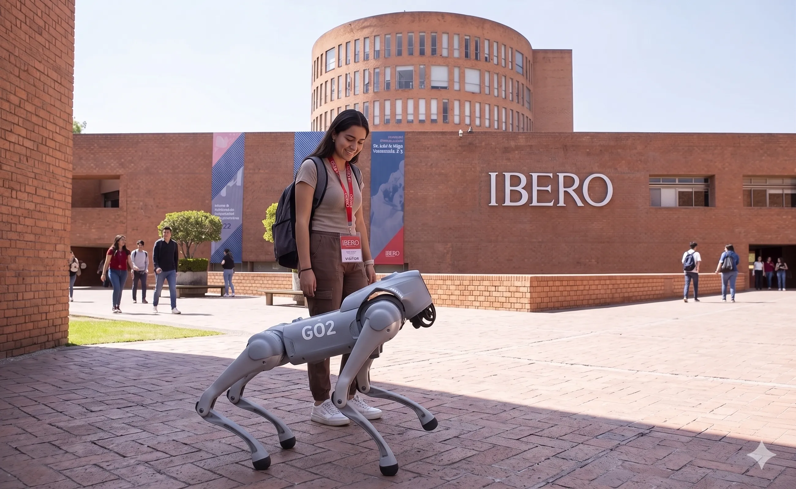
Concepto del proyecto Ronaldo en operación dentro del campus universitario — imagen generada con inteligencia artificial.
"La inteligencia es la habilidad de adaptarse al cambio." — Stephen Hawking
El Proyecto
Ronaldo es un agente conversacional diseñado como un sistema de guía universal, capaz de orientar personas en cualquier entorno: campus universitarios, hospitales, museos, aeropuertos, centros comerciales o cualquier espacio donde los visitantes necesiten asistencia para desplazarse y obtener información.
En este proyecto, Ronaldo se implementa y valida en el campus de la Universidad Iberoamericana (UIA) como caso de estudio, utilizando un robot cuadrúpedo Unitree Go2 Air. El sistema integra reconocimiento de voz en español, comprensión de lenguaje natural y navegación autónoma en una arquitectura modular basada en procesos independientes que se comunican a través de un bus de eventos.
A diferencia de los sistemas de guiado convencionales, Ronaldo no se limita a ejecutar instrucciones deterministas: el agente es capaz de interpretar comandos semánticos expresados en lenguaje natural, tales como "Llévame al salón que tenga un proyector 4K" o "Quiero ir al café de la universidad", y traducirlos en planes de navegación y diálogo apropiados para el usuario. Su arquitectura modular y el uso de APIs en la nube permiten adaptarlo a cualquier ubicación simplemente actualizando la base de datos de lugares, rutas y servicios.
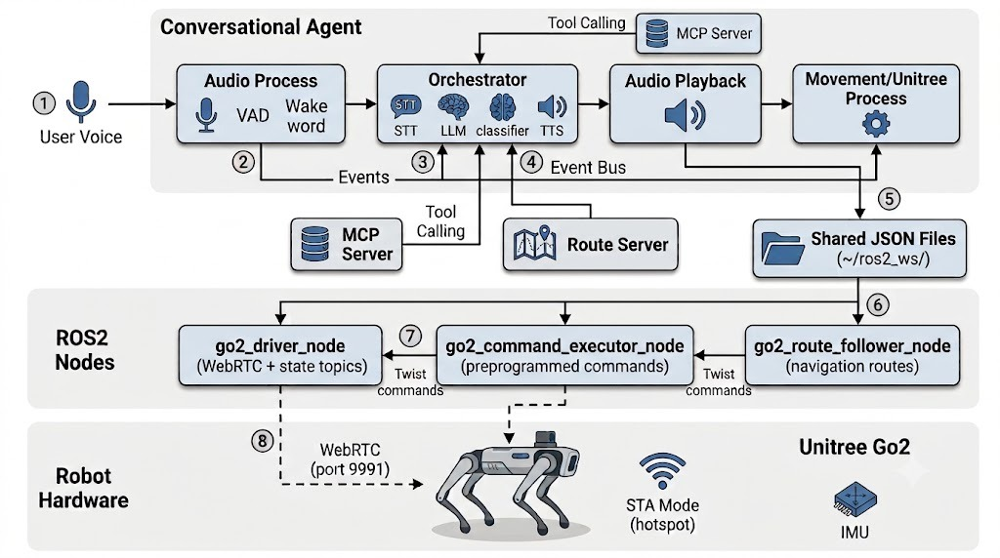
Arquitectura general del sistema Ronaldo mostrando las tres capas: Agente Conversacional (Python), Nodos ROS2 (orquestación de movimiento) y WebRTC (comunicación física con el robot Unitree Go2).
Resultados Destacados
| Métrica | Valor |
|---|---|
| Tasa de validez de Tool Calling | 100% |
| Recall en navegación (clasificador YAML) | 100% |
| Falsos positivos críticos | 0% |
| Latencia total del pipeline | ~1.6 s |
| Consumo RAM pico | 85.7 MB |
| Consumo CPU en idle | 0.7% |
| Viabilidad en Raspberry Pi 5 | 1.0% de RAM usada |
Tecnologías Clave
| Categoría | Herramienta |
|---|---|
| Reconocimiento de Voz (STT) | Groq Whisper, Deepgram Nova-3 |
| Modelo de Lenguaje (LLM) | Groq Llama 4 Scout 17B |
| Síntesis de Voz (TTS) | Edge TTS, Deepgram Aura-2 |
| Wake Word (offline) | Vosk (español, 42 MB) |
| Voice Activity Detection | Silero VAD |
| Protocolo de Herramientas | MCP (Model Context Protocol) |
| Robótica Middleware | ROS2 Humble + CycloneDDS |
| Comunicación Robot | WebRTC |
| Hardware Robot | Unitree Go2 Air |
Equipo
| Integrante | Rol |
|---|---|
| Fernando Pérez González | Desarrollo de Software e Infraestructura y Pruebas |
| Sebastián de Jesús Enguilo Ruiz | Desarrollo de Hardware/Robot: Go2 |
| José Adrián Bazaldua Huerta | Desarrollo de Software |
| Prof. Joel Arango Ramírez | Asesor Técnico |
| Prof. Huber Girón Nieto | Asesor Metodológico |
Programa: Ingeniería Mecatrónica y Sistemas Ciberfísicos Semestre: Verano 2026 Institución: Universidad Iberoamericana, Ciudad de México
Presentaciones
- Coordinación de Ingeniería Mecatrónica — Verano 2026
Navegación Rápida
Resumen del Proyecto · Arquitectura · Agente Conversacional · Control del Robot · Resultados · Repositorio GitHub
© 2026 — Universidad Iberoamericana · Ingeniería Mecatrónica y Sistemas Ciberfísicos
Resumen del Proyecto
Este trabajo presenta Ronaldo, un agente conversacional diseñado para guiar personas dentro de un campus universitario mediante un robot cuadrúpedo Unitree Go2 Air. Ronaldo integra reconocimiento de voz, comprensión del lenguaje natural y navegación autónoma en una arquitectura modular basada en procesos independientes que se comunican a través de un bus de eventos.
Componentes Principales
El sistema emplea inteligencia artificial en la nube a través de las API gratuitas de:
| Servicio | Modelo / Herramienta | Función |
|---|---|---|
| Groq | Whisper Large v3 Turbo | Transcripción de voz (STT) |
| Groq | Llama 4 Scout 17B | Generación de lenguaje (LLM) |
| Deepgram | Aura-2 | Síntesis de voz (TTS) |
| Edge TTS | Microsoft Edge | Síntesis de voz alternativa (gratuita) |
| Vosk | Modelo español 42 MB | Palabra de activación offline |
Capa de Control Robótico
La capa de control robótico se apoya en ROS2 Humble y WebRTC para la comunicación con el robot, utilizando un sistema de tres nodos ROS2 que traducen comandos del agente en instrucciones de movimiento físico.
Resultados Clave
Los resultados de pruebas sistemáticas siguiendo los estándares IEEE 29119-1, ISO 25022 e ISO 25023 muestran:
| Métrica | Resultado |
|---|---|
| Tasa de validez de tool calling | 100% |
| Latencia total del pipeline | ~1.6 segundos |
| Consumo RAM pico | 85.7 MB |
| Viabilidad RPi5 | 1.0% de RAM |
Estos resultados confirman la viabilidad de ejecutar el sistema en hardware de bajo costo como la Raspberry Pi 5.
Palabras Clave
agente inteligente robótica de servicio guía autónoma procesamiento de voz navegación en interiores Unitree Go2 ROS2 WebRTC Groq MCP
1. Contexto y Motivación
Este capítulo presenta el problema que motiva el desarrollo de Ronaldo, la solución propuesta y los objetivos del proyecto.
1.1 El Problema del Guiado en Campus
La Necesidad
La Universidad Iberoamericana (UIA) recibe de manera recurrente a visitantes externos que requieren orientación dentro del campus. Este problema no es exclusivo de la UIA: cualquier espacio público o privado de cierta complejidad enfrenta el mismo desafío. En el caso específico de la universidad, los visitantes incluyen:
- Visitantes de primera vez que nunca han ingresado al campus y desconocen por completo su distribución
- Padres de familia en recorridos de admisión
- Estudiantes de otras instituciones que asisten a torneos y competencias
- Aspirantes de nuevo ingreso durante el proceso de selección
- Visitantes ocasionales a eventos académicos y culturales
Si bien el campus no es de gran extensión, su trazado y la similitud entre varios de sus edificios ocasionan que los visitantes —especialmente quienes lo pisan por primera vez— experimenten dificultades para localizar con confianza:
- Salones y laboratorios
- Auditorios
- Cafeterías y comedores
- Oficinas administrativas
- Servicios estudiantiles
Un Problema Universal
El desafío de guiar personas en espacios desconocidos trasciende el ámbito universitario. Hospitales, museos, aeropuertos, centros comerciales y edificios gubernamentales comparten la misma necesidad: visitantes que requieren orientación en tiempo real, en un lenguaje natural y con acompañamiento físico hasta su destino. Ronaldo se concibe como una solución genérica a este problema, con la UIA como primer caso de implementación y validación.
La Solución Actual y sus Limitaciones
Ante esta necesidad, la universidad ha dispuesto tradicionalmente personal dedicado a ofrecer recorridos guiados. Sin embargo, esta solución presenta limitaciones importantes:
| Limitación | Impacto |
|---|---|
| Dependencia de disponibilidad de guías humanos | Recurso limitado en ciertos horarios y temporadas |
| Consistencia variable | La calidad del guiado depende del guía individual |
| Escalabilidad limitada | No es posible atender a múltiples visitantes simultáneamente |
| Cobertura temporal restringida | Horarios de oficina; no hay servicio nocturno o fines de semana |
La Pregunta de Investigación
Esta pregunta guía el desarrollo de Ronaldo como alternativa de orientación continua, escalable y consistente.
1.2 La Solución: Ronaldo
¿Qué es Ronaldo?
Ronaldo es un agente inteligente de guía universal, capaz de orientar visitantes en cualquier entorno físico mediante un robot cuadrúpedo Unitree Go2 Air. Su arquitectura fue diseñada desde cero para ser independiente del lugar: basta con actualizar la base de datos de ubicaciones, rutas y servicios para adaptarlo a un hospital, museo, aeropuerto, centro comercial o cualquier edificio que reciba visitantes.
En este proyecto, Ronaldo se implementa y valida en el campus de la Universidad Iberoamericana como primer caso de estudio. El sistema integra dos componentes principales:
Capa de Software
Basada en herramientas de inteligencia artificial en la nube (gratuitas), mediante la cual Ronaldo mantiene conocimiento estructurado sobre las instalaciones, rutas y servicios de la universidad:
- Reconocimiento de voz en español (STT)
- Comprensión de lenguaje natural (LLM con tool calling)
- Síntesis de voz natural (TTS)
- Base de datos del campus accesible mediante el protocolo MCP
Capa de Hardware
Conformada por un robot cuadrúpedo Unitree Go2 Air, que actúa como periférico físico de interacción y acompañamiento del usuario. El robot:
- Responde a la palabra de activación "Ronaldo"
- Ejecuta comandos de voz (sentarse, saludar, bailar)
- Navega rutas predefinidas entre puntos del campus
- Reproduce respuestas de voz a través de su altavoz integrado
¿Qué hace diferente a Ronaldo?
A diferencia de los sistemas de guiado convencionales, Ronaldo no se limita a ejecutar instrucciones deterministas. El agente es capaz de:
- Interpretar comandos semánticos expresados en lenguaje natural
- "Llévame al salón que tenga un proyector 4K" - "Quiero ir al café de la universidad" - "¿Dónde están las máquinas expendedoras?"
- Traducir intenciones en planes de navegación
- El clasificador de dos etapas identifica la intención del usuario - El motor de diálogo consulta información actualizada mediante herramientas - El sistema resuelve rutas óptimas hacia el destino
- Mantener conversaciones contextuales
- Memoria de 20 turnos de conversación - Reconocimiento y uso del nombre del usuario - Confirmación antes de ejecutar acciones críticas
Resumen de Capacidades
| Capacidad | Descripción |
|---|---|
| 🗣️ Reconocimiento de Voz | Transcripción de español con Groq Whisper (750 ms) |
| 🧠 Comprensión de Lenguaje | Llama 4 Scout 17B con tool calling |
| 🗺️ Navegación Autónoma | Rutas predefinidas en JSON, ejecutadas vía ROS2 |
| 🏫 Conocimiento del Campus | Base de datos accesible vía protocolo MCP |
| 🎤 Síntesis de Voz | Respuestas naturales con Edge TTS / Deepgram |
| 🔌 Operación Offline Parcial | Palabra de activación sin internet (Vosk) |
| 📱 Hardware de Bajo Costo | Ejecutable en Raspberry Pi 5 (~86 MB RAM) |
1.3 Objetivos
Objetivo General
Construir un agente conversacional capaz de recibir instrucciones en lenguaje natural, consultar información estructurada del campus universitario mediante herramientas externas, y traducir las decisiones del diálogo en movimientos físicos de un robot cuadrúpedo Unitree Go2.
Objetivos Específicos
1. Pipeline de Voz Completo
- Implementar un sistema de captura, transcripción y síntesis de voz en español
- Utilizar APIs gratuitas en la nube (Groq, Deepgram, Edge TTS)
- Garantizar detección de palabra de activación offline (Vosk)
2. Comprensión de Lenguaje Natural
- Implementar clasificación de intenciones en dos etapas (YAML + LLM)
- Integrar tool calling nativo para consultar información del campus
- Mantener memoria conversacional de 20 turnos
3. Control del Robot
- Establecer comunicación WebRTC con el Unitree Go2
- Implementar tres nodos ROS2 para comandos y navegación
- Definir rutas de navegación predefinidas entre puntos del campus
4. Integración con la UIA
- Conectar el agente con información real del campus mediante MCP
- Mapear destinos y servicios universitarios
- Soportar consultas sobre lugares, comida, tiendas y oficinas
5. Evaluación y Validación
- Probar el sistema en 4 fases bajo estándares IEEE 29119-1, ISO 25022 e ISO 25023
- Medir latencia, consumo de recursos y precisión de clasificación
- Verificar viabilidad en hardware de bajo costo (Raspberry Pi 5)
Alcance y Exclusiones
| Incluido | No Incluido (Trabajo Futuro) |
|---|---|
| Navegación con rutas predefinidas | SLAM (navegación dinámica) |
| Comandos preprogramados del robot | Comandos de movimiento continuo (cmd_vel) |
| Clasificación YAML de 7 destinos | Rutas desde cualquier origen |
| 4 fases de pruebas cuantitativas | Pruebas con usuarios reales |
| Operación con APIs cloud gratuitas | Operación 100% offline |
2. Arquitectura del Sistema
Este capítulo presenta la arquitectura completa de Ronaldo: las tres capas del sistema, los procesos, el bus de eventos, el stack tecnológico y la distribución cloud vs local.
2.1 Visión General
Diagrama de Arquitectura General
Arquitectura general del sistema Ronaldo mostrando las tres capas que conectan el agente conversacional con el hardware del robot.
Las Tres Capas
Ronaldo está organizado en tres capas arquitectónicas que se comunican de forma jerárquica:
Capa 1: Asistente de Voz
Tecnología: Python · multiprocessing
Incluye los procesos de audio, orquestador y reproducción, así como el motor de diálogo con el LLM y el clasificador de intenciones. Es la capa donde reside la inteligencia del sistema.
Capa 2: Nodos ROS2
Tecnología: ROS2 Humble · CycloneDDS · C++/Python
Tres nodos ROS2 que traducen las decisiones del agente en comandos de movimiento y rutas de navegación. Actúa como intermediario entre la lógica conversacional y el hardware del robot.
Capa 3: WebRTC
Tecnología: WebRTC · C++
Protocolo de señalización y canal de datos que envía las instrucciones al robot Unitree Go2. Es la capa de comunicación física con el hardware.
Principios de Diseño
La arquitectura fue elegida por tres razones principales:
1. Aislamiento de Fallos
Si el proceso de audio falla, el orquestador y la reproducción de voz continúan funcionando. El sistema puede recuperarse sin reiniciar por completo.
2. Paralelismo Real
Cada proceso puede ejecutarse en un núcleo distinto de la CPU, lo que es fundamental para tareas como el procesamiento de audio en tiempo real mientras se espera la respuesta del modelo de lenguaje.
3. Modularidad
Cada componente puede ser reemplazado de forma independiente. Por ejemplo, el motor de reconocimiento de voz puede cambiarse de Groq a Deepgram modificando solo el módulo correspondiente, sin afectar al resto del sistema.
El Robot No es Autónomo
2.2 Diagrama de Capas
Flujo de Datos entre Capas
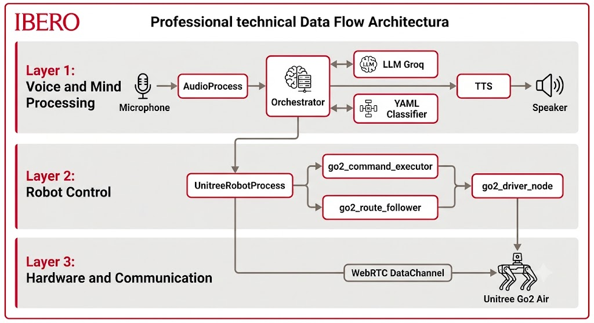
Figura 1: Diagrama de flujo de datos entre las 3 capas del sistema. Capa 1: Asistente de Voz (Python) con micrófono, AudioProcess, Orquestador, LLM Groq, Clasificador YAML y TTS. Capa 2: Nodos ROS2 (UnitreeRobotProcess, go2_command_executor, go2_route_follower, go2_driver_node). Capa 3: WebRTC hacia el Unitree Go2 Air.
Componentes de la Capa 1
| Componente | Proceso | Función |
|---|---|---|
| AudioProcess | audio.py |
Captura de micrófono, wake word, VAD |
| Orquestador | orquestador.py |
Orquestación central, clasificación, diálogo |
| AudioPlayback | playback.py |
Reproducción de respuestas TTS |
| UnitreeRobotProcess | unitree_robot.py |
Gestión de comandos y rutas del robot |
Componentes de la Capa 2
| Componente | Nodo ROS2 | Función |
|---|---|---|
| Driver Principal | go2_driver_node |
Conexión WebRTC, publicación de estado |
| Ejecutor de Comandos | go2_command_executor_node |
Comandos preprogramados (sentarse, bailar) |
| Seguidor de Rutas | go2_route_follower_node |
Ejecución de rutas JSON paso a paso |
Arquitectura de la Capa 2 en Detalle
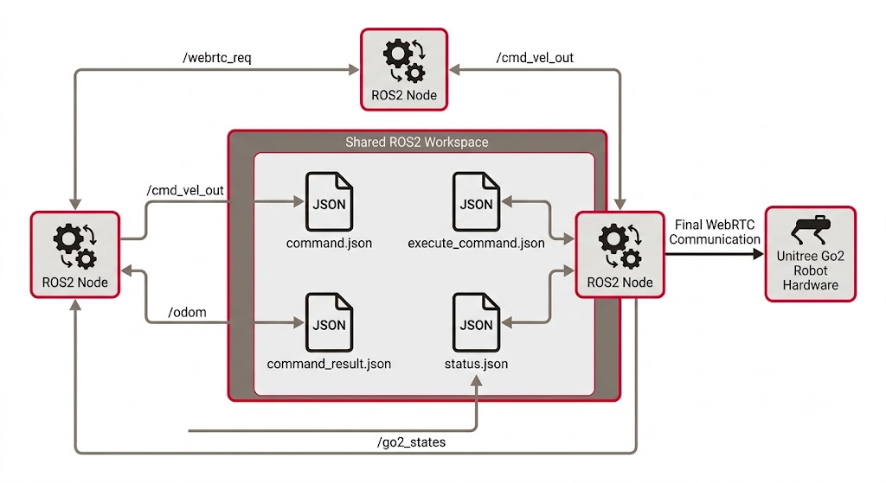
Figura 2: Arquitectura de nodos ROS2 con sus tópicos. Muestra el workspace compartido (archivos JSON), los 3 nodos principales (go2_command_executor_node, go2_route_follower_node, go2_driver_node) y los tópicos de comunicación (/webrtc_req, /cmd_vel_out, /odom, /go2_states).
2.3 Procesos y Bus de Eventos
Los Cuatro Procesos Principales
Ronaldo ejecuta cuatro procesos independientes que se comunican a través de un bus de eventos compartido.
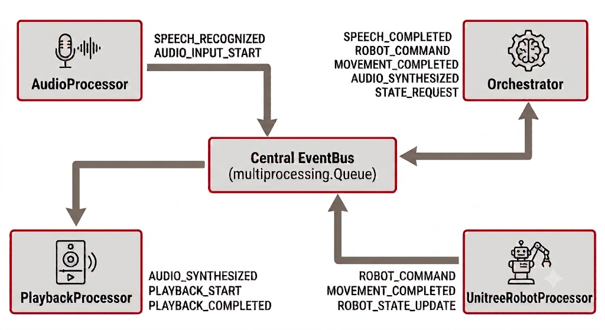
Figura 3: Los cuatro procesos del sistema (AudioProcess, Orquestador, PlaybackProcess, UnitreeRobotProcess) comunicándose bidireccionalmente a través del EventBus central basado en multiprocessing.Queue.
El Bus de Eventos (EventBus)
El bus de eventos es el sistema nervioso de Ronaldo. Implementa un patrón publicador-suscriptor:
- Cualquier proceso puede publicar un evento, y este se distribuye automáticamente a todos los demás procesos.
- Cada proceso tiene su propia cola privada de la que lee únicamente los eventos que le interesan.
- Los eventos ignorados simplemente se descartan del buffer de lectura.
Eventos Principales
| Evento | Publicador | Consumidores | Significado |
|---|---|---|---|
SPEECH_COMPLETED |
AudioProcess | Orquestador | Audio del usuario capturado y listo para transcribir |
MOVEMENT_COMPLETED |
UnitreeRobotProcess | Orquestador, Playback | Robot llegó a destino o completó comando |
CONVERSATION_CONTINUING |
Orquestador | AudioProcess | Modo conversación activo, seguir escuchando |
AUDIO_SYNTHESIZED |
Orquestador | Playback | Respuesta TTS lista para reproducir |
ROBOT_COMMAND |
Orquestador | UnitreeRobotProcess | Ejecutar comando en el robot |
MOVEMENT_SEQUENCE_READY |
Orquestador | UnitreeRobotProcess | Secuencia de rutas lista para ejecutar |
Fiabilidad del Bus
El EventBus fue probado con 100 eventos bajo estrés, mostrando:
| Métrica | Valor |
|---|---|
| Eventos enviados | 100 |
| Eventos recibidos | 100 |
| Pérdidas | 0 |
| Fuera de orden | 0 |
| Throughput | 1,300 eventos/segundo |
Descripción de Cada Proceso
AudioProcess
Máquina de estados con tres modos: WAKE_WORD (escucha palabra "ronaldo"), LISTENING (captura comando), COOLDOWN (enfriamiento post-respuesta). Utiliza Vosk (offline) para la palabra de activación y Silero VAD para detectar fin de habla.
Orquestador
Cerebro central. Clasifica intenciones (YAML + LLM), ejecuta acciones (comandos directos o navegación), y gestiona el diálogo conversacional con memoria de 20 turnos.
PlaybackProcess
Reproduce respuestas TTS en dos modos: streaming (fragmentos mientras se genera) y completo (audio completo de una vez).
UnitreeRobotProcess
Puente entre el agente Python y los nodos ROS2. Escribe archivos JSON de comandos y rutas, monitorea resultados.
2.4 Stack Tecnológico
Tecnologías por Categoría
Procesamiento de Voz
| Servicio | Tecnología | Uso en Ronaldo |
|---|---|---|
| Groq Whisper | Whisper Large v3 Turbo | Reconocimiento de voz (STT) principal |
| Deepgram Nova-3 | Deepgram API | STT alternativo con streaming |
| Edge TTS | Microsoft Edge | Síntesis de voz (TTS) por defecto |
| Deepgram Aura-2 | Deepgram API | TTS alternativo de alta calidad |
| Vosk | Modelo español 42 MB (offline) | Palabra de activación "ronaldo" |
| Silero VAD | ONNX (offline) | Detección de actividad de voz |
Inteligencia Artificial
| Componente | Tecnología | Detalle |
|---|---|---|
| LLM Principal | Groq Llama 4 Scout 17B | 17B parámetros, inferencia acelerada |
| Clasificador | YAML + LLM híbrido | Dos etapas: patrones + modelo de lenguaje |
| Tool Calling | Implementación nativa | Integración con MCP |
| Memoria | Historial en memoria | 20 turnos de conversación |
Robótica
| Componente | Tecnología | Versión |
|---|---|---|
| Middleware | ROS2 | Humble |
| DDS | CycloneDDS | - |
| Comunicación Robot | WebRTC | Canal de datos bidireccional |
| Robot | Unitree Go2 Air | Quadrúpedo con LiDAR, cámara, IMU |
| SDK Robot | go2_ros2_sdk | Nodos ROS2 principales |
| Control Custom | unitree_go2_unitree | Rutas y comandos personalizados |
Infraestructura
| Componente | Tecnología | Nota |
|---|---|---|
| Lenguaje | Python 3.12+ | Todo el agente conversacional |
| Gestión de Paquetes | uv | Instalación y dependencias |
| IPC | multiprocessing.Queue | Comunicación entre procesos |
| Base de Datos | SQLite (modo lectura) | Acceso vía MCP |
| Protocolo | MCP (Model Context Protocol) | Intermediación LLM ↔ DB |
Dependencias Clave de Python
| Paquete | Versión | Función |
|---|---|---|
vosk |
≥ 0.3.45 | Wake word offline |
silero-vad |
≥ 5.1 | Voice Activity Detection |
edge-tts |
≥ 6.1 | Síntesis de voz gratuita |
groq |
≥ 0.15.0 | API Groq (STT + LLM) |
deepgram-sdk |
≥ 3.7 | API Deepgram alternativa |
psutil |
≥ 5.9 | Monitoreo de recursos |
pyyaml |
≥ 6.0 | Configuración de clasificador y rutas |
httpx |
≥ 0.27 | Cliente HTTP async para APIs |
2.5 Cloud vs Local
Distribución del Cómputo
Una decisión arquitectónica clave en Ronaldo fue desplazar el procesamiento intensivo a servidores remotos, manteniendo solo tareas livianas en el hardware local.
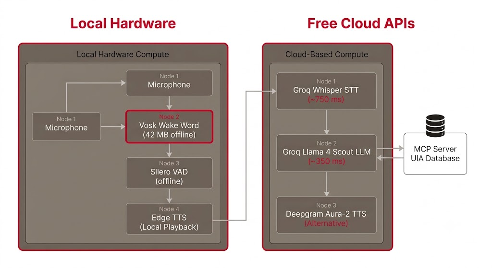
Figura 4: Distribución del cómputo entre hardware local (Vosk, Silero VAD, Edge TTS) y servicios cloud (Groq Whisper STT, Groq Llama 4 Scout LLM, Servidor MCP, Deepgram Aura-2 TTS).
Comparativa de Proveedores
Speech-to-Text (STT)
| Proveedor | Latencia | Precisión | Requiere Internet | Costo |
|---|---|---|---|---|
| Groq Whisper | ~750 ms | Alta | Sí | Free tier |
| Deepgram Nova-3 | ~500 ms | Muy alta | Sí | Free tier |
| Google Cloud STT | ~600 ms | Muy alta | Sí | Limitado |
| Parakeet (ONNX) | ~2000 ms | Media | No | Gratuito |
Text-to-Speech (TTS)
| Proveedor | Latencia | Naturalidad | Requiere Internet | Costo |
|---|---|---|---|---|
| Edge TTS | ~500 ms | Alta | Sí | Gratuito |
| Deepgram Aura-2 | ~400 ms | Muy alta | Sí | Free tier |
| Local TTS (coqui) | ~1500 ms | Media | No | Gratuito |
Viabilidad en Raspberry Pi 5
Una de las conclusiones más relevantes de las pruebas es que Ronaldo puede ejecutarse en una Raspberry Pi 5 con 8 GB de RAM:
| Métrica | Ronaldo | RPi5 Disponible | % Usado |
|---|---|---|---|
| RAM pico | 85.7 MB | 8,192 MB | 1.0% |
| RAM idle | 23.5 MB | 8,192 MB | 0.3% |
| CPU pico | 10% (1 núcleo) | 4 núcleos Cortex-A76 | 2.5% |
Estrategia de Fallback
El sistema está diseñado para operar sin conexión a internet en ciertas funciones:
| Función | Con Internet | Sin Internet |
|---|---|---|
| Palabra de activación | Vosk | ✅ Vosk (siempre offline) |
| Reconocimiento de voz | Groq Whisper | ⚠️ Parakeet local |
| Comprensión de lenguaje | Groq Llama 4 Scout | ❌ No disponible |
| Síntesis de voz | Edge TTS | ⚠️ Coqui TTS local |
| Consultas al campus | Servidor MCP | ❌ No disponible |
3. Agente Conversacional
Este capítulo detalla el corazón del sistema: el pipeline de voz completo, la detección de palabra de activación, el reconocimiento y síntesis de voz, la clasificación de intenciones, el motor de diálogo con tool calling, el servidor MCP, la memoria conversacional y los mecanismos antifeedback.
3.1 Pipeline de Voz
Flujo Completo de Procesamiento
El pipeline de voz de Ronaldo transforma una pregunta hablada en una respuesta audible en aproximadamente 1.6 segundos.
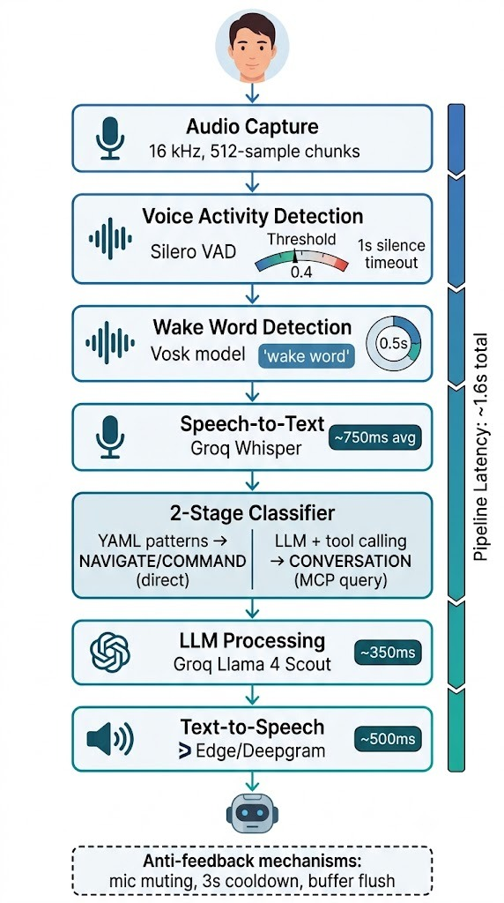
Figura 5: Pipeline completo de procesamiento de voz. Flujo: Micrófono (16 kHz, 512 muestras) → Wake Word Vosk (< 200 ms) → Silero VAD → Groq Whisper STT (~750 ms) → Clasificador YAML+LLM → Groq Llama 4 Scout (~350 ms) → Edge TTS (~500 ms) → Altavoz. Tiempo total del pipeline: ~1.6 segundos.
Desglose de Latencia
| Etapa | Tecnología | Tiempo | Offline |
|---|---|---|---|
| Captura de audio | PyAudio | Continuo | Sí |
| Wake Word | Vosk (42 MB) | < 200 ms | ✅ |
| Voice Activity Detection | Silero VAD | < 50 ms | ✅ |
| Reconocimiento de voz (STT) | Groq Whisper | ~750 ms | No |
| Clasificación YAML | Patrones locales | < 1 ms | ✅ |
| Comprensión (LLM) | Groq Llama 4 Scout | ~350 ms | No |
| ToolValidator | Validación local | < 0.01 ms | ✅ |
| Síntesis de voz (TTS) | Edge TTS | ~500 ms | No |
| Total Pipeline | ~1,600 ms |
Parámetros de Audio
| Parámetro | Valor | Justificación |
|---|---|---|
| Tasa de muestreo | 16 kHz | Estándar para reconocimiento de voz |
| Tamaño de fragmento | 512 muestras (~32 ms) | Balance entre latencia y procesamiento |
| Formato | 16-bit PCM mono | Compatible con todos los proveedores STT |
| Buffer circular wake word | 0.5 segundos | No perder inicio del comando |
| Silencio para fin de habla | 1 segundo continuo | Detección robusta de fin de comando |
3.2 Palabra de Activación y VAD
Máquina de Estados del AudioProcess
El proceso de audio opera como una máquina de estados con tres modos bien definidos:
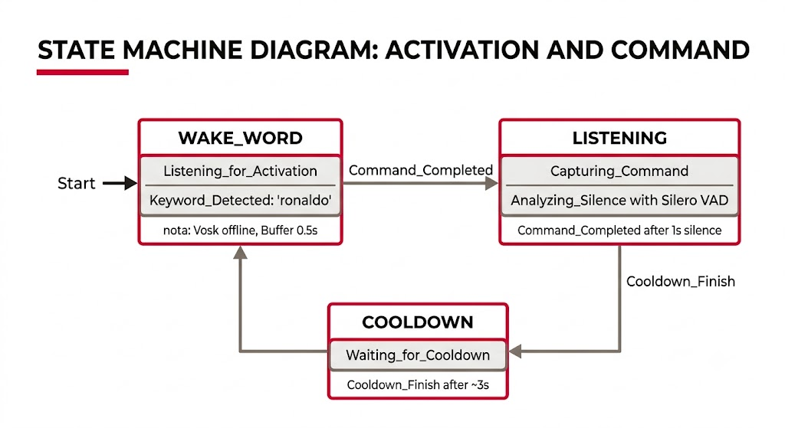
Figura 6: Máquina de estados del AudioProcess con tres modos: WAKE_WORD (escucha palabra "ronaldo" con Vosk offline), LISTENING (captura comando con Silero VAD, detección de 1s de silencio), y COOLDOWN (enfriamiento de ~3s post-respuesta para evitar realimentación acústica).
Detección de Palabra de Activación (Wake Word)
Ronaldo utiliza Vosk, un modelo de reconocimiento de voz offline, para detectar la palabra "ronaldo".
Características de Vosk
| Característica | Valor |
|---|---|
| Modelo | vosk-model-small-es-0.42 |
| Tamaño | 42 MB |
| Operación | Completamente offline |
| Tiempo de detección | < 200 ms |
| Buffer circular | 0.5 segundos |
¿Por qué Vosk?
- No requiere internet: el sistema puede activarse incluso sin conexión
- Ligero: solo 42 MB, cabe en cualquier dispositivo
- Rápido: detección en menos de 200 ms
- Preciso en español: entrenado específicamente para español
Detección de Actividad de Voz (VAD)
Una vez detectada la palabra de activación, Silero VAD determina cuándo el usuario ha terminado de hablar.
Características de Silero VAD
| Parámetro | Valor |
|---|---|
| Modelo | Silero VAD (ONNX) |
| Umbral de detección | 0.4 (escala 0-1) |
| Silencio para fin | 1 segundo continuo |
| Operación | Offline |
Funcionamiento
- Cada fragmento de audio (32 ms) es analizado por Silero VAD
- Si se detecta voz → contador de silencio se reinicia
- Si se detecta silencio → contador incrementa
- Cuando el contador alcanza 1 segundo continuo → comando terminado
- El audio capturado se envía al orquestador para transcripción
Modo COOLDOWN
Después de enviar el comando al orquestador, el sistema entra en modo de enfriamiento por aproximadamente 3 segundos (configurable). Esto evita que:
- El micrófono capture el eco de la respuesta del robot
- Se procese accidentalmente una nueva interacción
- El sistema entre en bucle de realimentación acústica
3.3 STT — Reconocimiento de Voz
Proveedores Soportados
Ronaldo soporta múltiples proveedores de Speech-to-Text, configurables desde un archivo de entorno (.env).
| Proveedor | Modelo | Latencia Promedio | Streaming | Offline | Costo |
|---|---|---|---|---|---|
| Groq Whisper | whisper-large-v3-turbo |
750 ms | No | No | Free tier |
| Deepgram Nova-3 | Nova-3 | ~500 ms | ✅ | No | Free tier |
| Google Cloud STT | Standard | ~600 ms | ✅ | No | Limitado |
| Parakeet (ONNX) | Local ONNX | ~2000 ms | No | ✅ | Gratuito |
Groq Whisper (Por Defecto)
El proveedor por defecto es Groq Whisper, que ofrece:
- Velocidad: transcripción en ~750 ms (mediana P50: 708 ms)
- Precisión: modelo
whisper-large-v3-turbooptimizado por Groq
- Gratuito: capa gratuita generosa que permite todas las pruebas sin costo
- Español nativo: excelente reconocimiento del idioma
Métricas de Rendimiento (Groq Whisper)
| Métrica | Tiempo (ms) |
|---|---|
| Promedio | 750.7 |
| Mediana (P50) | 708.2 |
| P95 | 1025.0 |
| Máximo | 1025.0 |
Deepgram Nova-3 (Alternativa)
Deepgram ofrece transcripción en streaming, ideal para comandos largos:
- El audio se envía en tiempo real mientras se captura
- La transcripción parcial se muestra antes de que el usuario termine de hablar
- Reduce la latencia percibida en comandos extensos
Parakeet (Local)
Para operación sin conexión a internet, Parakeet ejecuta un modelo ONNX completamente en la computadora:
- Ventaja: funciona sin internet
- Desventaja: ~2 segundos de latencia (más lento que cloud)
- Uso: fallback cuando no hay conexión
Método de Transcripción
Independientemente del proveedor, el flujo es el mismo:
- El
AudioProcesscaptura el audio y detecta fin de habla
- El audio se envía al
Orquestadorcomo array de bytes (16 kHz, mono)
- El
Orquestadorinvoca el proveedor STT configurado
- El texto transcrito se pasa al clasificador de intenciones
- Si el clasificador no reconoce el comando, el texto se envía al LLM
3.4 TTS — Síntesis de Voz
Proveedores Soportados
La respuesta del asistente se convierte en audio mediante un motor de texto a voz. Ronaldo soporta tres proveedores configurables.
| Proveedor | Voces Español | Latencia | Calidad | Requiere Internet | Costo |
|---|---|---|---|---|---|
| Edge TTS | Sí (varias) | ~500 ms | Alta | Sí | Gratuito |
| Deepgram Aura-2 | Sí (natural) | ~400 ms | Muy alta | Sí | Free tier |
| Local TTS | Sí (limitada) | ~1500 ms | Media | No | Gratuito |
Edge TTS (Por Defecto)
El proveedor por defecto es Edge TTS, basado en el motor de síntesis de Microsoft Edge:
- Gratuito: sin límites de uso ni necesidad de API key
- Natural: voces en español con entonación y prosodia adecuadas
- Rápido: ~500 ms para generar el audio de una respuesta típica
- Streaming: soporta reproducción por fragmentos mientras genera
Voces Disponibles en Español
| Voz | Género | Estilo |
|---|---|---|
es-MX-DaliaNeural |
Femenino | Natural mexicano |
es-MX-JorgeNeural |
Masculino | Natural mexicano |
es-ES-AlvaroNeural |
Masculino | Natural español |
es-ES-ElviraNeural |
Femenino | Natural español |
Deepgram Aura-2 (Alta Calidad)
Deepgram ofrece síntesis de voz de calidad superior con voces naturales en español:
- Latencia: ~400 ms
- Naturalidad: voces indistinguibles de una persona real
- Disponible: capa gratuita con créditos iniciales
- Streaming: reproducción por fragmentos
Modos de Reproducción
El PlaybackProcess soporta dos modos de reproducción:
Modo Streaming
- El audio se genera y reproduce en fragmentos consecutivos
- El usuario escucha la respuesta mientras se sigue generando
- Reduce significativamente el tiempo de espera percibido
Modo Completo
- Se genera el audio completo y luego se reproduce
- Útil para respuestas muy cortas o cuando el streaming no está disponible
- Mayor latencia percibida por el usuario
Flujo de Reproducción
LLM genera texto → TTS genera audio → PlaybackProcess recibe audio
→ Si streaming: reproduce fragmentos conforme llegan
→ Si completo: espera audio completo y reproduce
→ Evento PLAYBACK_COMPLETED → Sistema vuelve a escuchar3.5 Clasificación de Intenciones
Sistema Híbrido de Dos Etapas
Ronaldo utiliza un clasificador híbrido que combina velocidad (YAML) con inteligencia (LLM).
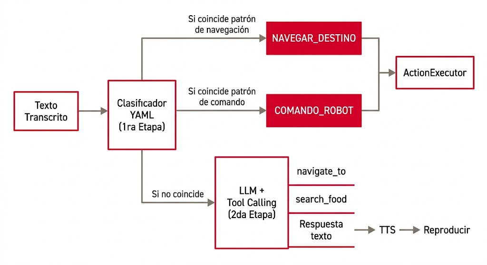
Figura 7: Sistema híbrido de clasificación de intenciones. Primera etapa: Clasificador YAML por patrones (navegación → NAVEGAR_DESTINO, comandos → COMANDO_ROBOT). Segunda etapa: LLM con Tool Calling para intenciones no reconocidas (navigate_to, search_food, o respuesta de texto directa).
Primera Etapa: Clasificador YAML
El archivo de configuración YAML define patrones de texto para reconocer intenciones sin pasar por el LLM:
navigation:
- patterns: ["biomedica", "biomédica", "biomedicas"]
intent: NAVEGAR_BIOMEDICA
- patterns: ["biblioteca", "biblioteca francisco xavier"]
intent: NAVEGAR_BIBLIOTECA
- patterns: ["karpa", "la karpa", "cafeteria"]
intent: NAVEGAR_KARPA
- patterns: ["maquinas", "máquinas", "laboratorio de maquinas"]
intent: NAVEGAR_MAQUINAS
- patterns: ["giornale", "gironale"]
intent: NAVEGAR_GIORNALE
commands:
- patterns: ["sientate", "siéntate", "sentado"]
intent: COMANDO_SIT
- patterns: ["parate", "párate", "levantate"]
intent: COMANDO_STAND_UP
- patterns: ["baila", "bailar"]
intent: COMANDO_DANCE
- patterns: ["saluda", "saludar", "hola"]
intent: COMANDO_HELLO
- patterns: ["acuestate", "acuéstate"]
intent: COMANDO_STAND_DOWNVentajas del Clasificador YAML
- Latencia < 1 ms: comparación de strings instantánea
- Sin llamada a API: no consume créditos de Groq
- Determinista: 100% predecible para comandos conocidos
- Recall perfecto en navegación: 100% en pruebas
Segunda Etapa: LLM con Tool Calling
Cuando el clasificador YAML no reconoce el comando, el texto se envía al modelo de lenguaje:
- El LLM analiza la intención del usuario
- Decide si necesita consultar herramientas externas (MCP)
- Si la intención es navegación: invoca
navigate_to
- Si es consulta informativa: invoca herramientas de búsqueda (comida, lugares, oficinas)
- Si es conversación casual: genera respuesta de texto directa
Resultados de Clasificación (Fase 2)
| Clase | Precisión | Recall | F1-Score |
|---|---|---|---|
| Navegación | 0.7692 | 1.0000 | 0.8696 |
| Comandos | 0.8889 | 0.8000 | 0.8421 |
| Conversación | 0.5556 | 0.7692 | 0.6452 |
| Ruido | 0.0000 | 0.0000 | 0.0000 |
3.6 Motor de Diálogo y Tool Calling
Flujo de Tool Calling
Una de las capacidades más importantes de Ronaldo es que el modelo de lenguaje puede decidir usar herramientas externas para obtener información real del campus, en lugar de generar respuestas inventadas.
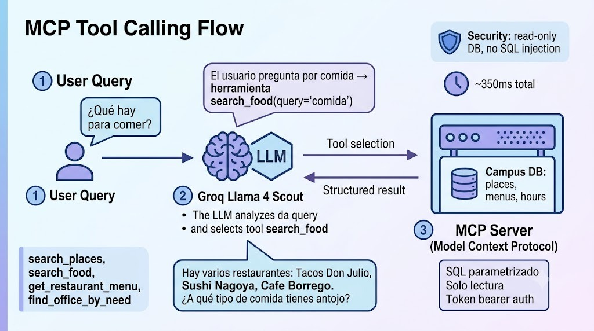
Figura 8: Diagrama de secuencia del flujo de Tool Calling. Usuario → Groq Llama 4 Scout → ToolValidator (verifica existencia, tipos y valores) → Servidor MCP (ejecuta tool con SQL parametrizado) → Base de Datos UIA (modo solo lectura) → resultado → LLM genera respuesta natural.
Herramientas Disponibles (5 Categorías)
1. Lugares (search_places)
- Buscar lugares por nombre o tipo
- Obtener detalles de un lugar específico
- Listar todos los lugares del campus
2. Comida (search_food)
- Buscar platillos y restaurantes
- Obtener menús del día
- Filtrar por tipo de comida
3. Tiendas (search_products)
- Buscar productos en tiendas del campus
- Consultar inventario
- Ver precios y disponibilidad
4. Servicios (search_services)
- Buscar oficinas de profesores
- Obtener lista de puertas de acceso
- Información administrativa
5. Contexto (campus_context)
- Resumen general del campus
- Niveles de afluencia
- Búsqueda en documentos
Ejemplo de Diálogo Multi-Tool
Usuario: "Quiero ir a comer"
LLM: search_food(category="all")
→ "Hay restaurantes: Tacos Don Julio, Sushi Nagoya, Cafe Borrego.
¿Qué tipo de comida prefieres?"
Usuario: "Tacos"
LLM: search_food(category="tacos")
→ "Tacos Don Julio está en el edificio Giornale.
¿Te gustaría ir?"
Usuario: "Sí, llévame"
LLM: navigate_to(destination="Giornale")
→ "¡Vamos! Sígueme hacia el edificio Giornale."Validación de Tool Calls (ToolValidator)
Antes de ejecutar cualquier herramienta, el ToolValidator inspecciona la llamada generada por el LLM:
| Verificación | Descripción |
|---|---|
| Existencia de la herramienta | ¿Está definida en el esquema? |
| Campos requeridos | ¿Faltan parámetros obligatorios? |
| Tipos correctos | ¿Los valores son del tipo esperado? |
| Valores enumerados | ¿Los valores están en la lista de permitidos? |
| Nulos | ¿Hay parámetros con valor None? |
Overhead del ToolValidator
| Métrica | Tiempo |
|---|---|
| Promedio | 0.004 ms |
| P95 | 0.005 ms |
| Máximo (P99) | 0.026 ms |
navigate_to.
3.7 Servidor MCP
Model Context Protocol (MCP)
El componente que conecta al agente con la información estructurada de la universidad es un servidor que implementa el Model Context Protocol (MCP).
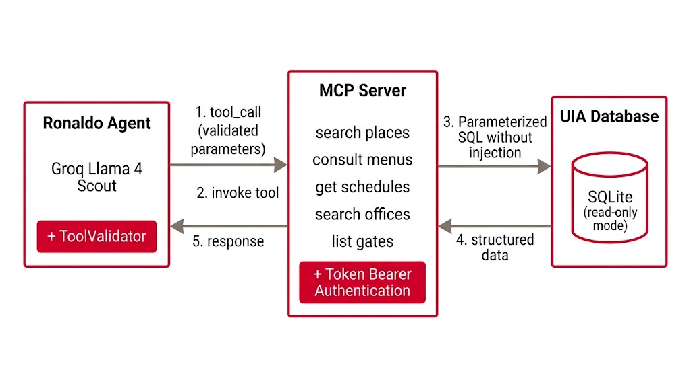
Figura 9: Arquitectura del Model Context Protocol (MCP). El agente Ronaldo (LLM + ToolValidator) se comunica con el Servidor MCP (tools tipadas, token bearer), que a su vez consulta la base de datos UIA (SQLite, modo solo lectura) mediante SQL parametrizado sin exponer consultas directas al LLM.
¿Por qué MCP?
El protocolo MCP opera como una capa de intermediación entre el modelo de lenguaje y la base de datos del campus. En lugar de exponer consultas SQL de forma directa, el servidor publica un conjunto de tools tipadas y parametrizadas.
Ventajas del Enfoque
| Característica | Beneficio |
|---|---|
| Tools tipadas | Cada tool tiene parámetros con tipos definidos |
| SQL parametrizado | Previene inyección SQL |
| Modo solo lectura | Mitiga impacto de errores de prompting |
| Desacoplamiento | Cambiar fuente de datos no afecta al LLM |
| Token bearer | Autenticación compartida entre servicios |
Seguridad
El acceso al servidor se protege mediante múltiples capas:
- Token Bearer: compartido por todos los servicios internos
- Conexiones solo lectura: la base de datos opera exclusivamente en modo lectura
- Parámetros validados: el ToolValidator inspecciona antes de enviar al MCP
- Sin SQL directo: el LLM nunca ve ni genera consultas SQL
Ejemplo de Tool MCP
{
"name": "search_places",
"description": "Buscar lugares en el campus por nombre, tipo o características",
"parameters": {
"type": "object",
"properties": {
"query": {
"type": "string",
"description": "Texto de búsqueda (nombre del lugar, tipo, etc.)"
},
"place_type": {
"type": "string",
"enum": ["cafeteria", "aula", "laboratorio", "auditorio", "oficina", "tienda", "baño", "todos"],
"default": "todos"
}
},
"required": ["query"]
}
}Vinculación con Herramientas del Agente
Las tools del MCP se exponen al LLM como herramientas que puede invocar durante el diálogo. El agente decide autónomamente cuál herramienta usar en función del contexto de la conversación.
3.8 Memoria Multi-Turno
Historial de Conversación
Ronaldo mantiene un historial de los últimos 20 turnos de conversación. Esto permite recordar el contexto de interacciones anteriores sin necesidad de que el usuario repita información.
Ejemplo de Conversación Multi-Turno
Turno 1:
Usuario: "Quiero ir a comer"
Ronaldo: "¿A qué tipo de comida tienes antojo?"
Turno 2:
Usuario: "Tacos"
Ronaldo: [search_food("tacos")]
"Hay Tacos Don Julio en el edificio Giornale. ¿Te gustaría ir?"
Turno 3:
Usuario: "Sí, llévame"
Ronaldo: [navigate_to("Giornale")]
"¡Vamos! Sígueme hacia el edificio Giornale."Memoria del Nombre del Usuario
Cuando el usuario se presenta, el sistema extrae automáticamente el nombre y lo recuerda para toda la sesión:
Usuario: "Hola Ronaldo, me llamo Armando"
Ronaldo: "¡Hola Armando! ¿En qué puedo ayudarte?"
... (varios turnos después) ...
Usuario: "¿Qué me recomiendas?"
Ronaldo: "Armando, te recomendaría visitar la cafetería La Karpa..."Sistema de Prompt Dinámico
El prompt de sistema que recibe el LLM se actualiza dinámicamente en cada interacción:
[ROBOT LOCATION]
El robot está actualmente en: Laboratorio de Robótica
[USER CONTEXT]
Nombre del usuario: Armando
Última consulta: comida
[AVAILABLE PLACES]
- La Karpa (cafetería) — abierto 8:00-18:00
- Giornale (edificio) — Tacos Don Julio, Sushi Nagoya
- Biblioteca F.X. Clavijero — abierto 7:00-22:00
[TOOL GUIDELINES]
- Usa search_food para consultas sobre comida
- Usa search_places para ubicar lugares
- Usa navigate_to solo después de confirmar con el usuario
- No ejecutes acciones sin confirmación del usuarioLímites y Comportamiento
| Característica | Valor |
|---|---|
| Turnos máximos | 20 (FIFO) |
| Nombre del usuario | Persiste toda la sesión |
| Prompt dinámico | Actualizado cada turno |
| Clear de contexto | Al iniciar nueva sesión o comando explícito |
3.9 Mecanismos Antifeedback
El Problema del Bucle Acústico
Cuando un robot reproduce audio a través de su altavoz mientras tiene un micrófono activo, puede producirse un bucle de realimentación acústica: el robot escucha su propia respuesta, la interpreta como un nuevo comando, genera otra respuesta, y así sucesivamente.
Ronaldo implementa tres mecanismos para prevenir este fenómeno.
Mecanismo 1: Muteo del Micrófono Durante la Respuesta
Mientras el robot está reproduciendo una respuesta TTS, el proceso de audio ignora completamente las muestras del micrófono.
Estado: REPRODUCIENDO
└── AudioProcess: todas las muestras del micrófono → descartadas
└── No se procesa audio hasta que termine la reproducciónMecanismo 2: Tiempo de Enfriamiento Post-Respuesta
Después de que el robot termina de hablar, el sistema espera un tiempo configurable:
| Parámetro | Valor por Defecto | Descripción |
|---|---|---|
cooldown_time |
3 segundos | Espera antes de volver a escuchar |
| Ubicación | AudioProcess (COOLDOWN state) |
Parte de la máquina de estados |
Durante este tiempo, el micrófono se ignora completamente, incluso si el usuario dice "Ronaldo".
Mecanismo 3: Vaciado del Buffer de Audio
Justo antes de comenzar a reproducir una respuesta, el sistema descarta cualquier audio capturado recientemente del buffer circular. Esto elimina fragmentos residuales que pudieran haberse capturado durante la transición entre estados.
Diagrama de Estados con Antifeedback
El AudioProcess con los mecanismos antifeedback opera de la siguiente manera:
- WAKE_WORD → LISTENING: al detectar "ronaldo"
- LISTENING → PROCESSING: comando capturado
- PROCESSING → MUTED_MIC: micrófono muteado y buffer vaciado durante reproducción TTS
- MUTED_MIC → COOLDOWN: reproducción completada
- COOLDOWN → WAKE_WORD: tras 3 segundos de espera configurable
Resumen de Protección
| Mecanismo | Cuándo se Activa | Efecto |
|---|---|---|
| Muteo del micrófono | Durante reproducción TTS | Ignora todas las muestras |
| Enfriamiento | Después de reproducción | Espera 3s antes de escuchar |
| Vaciado del buffer | Antes de reproducir respuesta | Descarta audio residual |
4. Control del Robot Unitree Go2
Este capítulo detalla el control del robot cuadrúpedo Unitree Go2 Air: sus capacidades, modos de red, comunicación WebRTC, la arquitectura de nodos ROS2, el sistema de archivos JSON compartidos, las rutas de navegación, los 30 comandos preprogramados y el mapeo de destinos.
4.1 El Robot y sus Capacidades
Unitree Go2 Air
El Unitree Go2 Air es un robot cuadrúpedo de última generación diseñado para investigación, educación y aplicaciones de servicio. Es la plataforma física sobre la que opera Ronaldo.
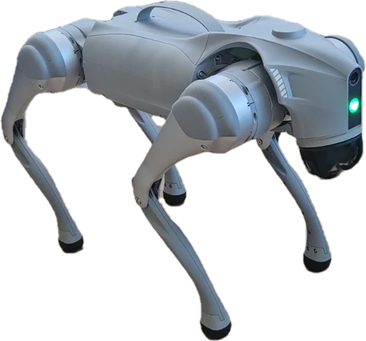
El Unitree Go2 Air utilizado en el proyecto. [Imagen referencial — reemplazar con foto real del robot]
Especificaciones Técnicas
| Componente | Especificación |
|---|---|
| Tipo | Robot cuadrúpedo |
| Grados de libertad | 12 (4 patas × 3 DOF) |
| Peso | ~15 kg |
| Velocidad máxima | ~5 m/s |
| Sensores | LiDAR 360°, cámara de profundidad Intel RealSense, IMU 9-DOF |
| Procesador | NVIDIA Jetson Orin NX (a bordo) |
| Conectividad | WiFi (AP/STA), Bluetooth, Ethernet |
| Altavoz | Integrado (para respuestas TTS) |
| Micrófono | Integrado (para comandos de voz) |
| Batería | ~2 horas de operación continua |
Capacidades del Robot
Comandos de Postura
| Comando | API ID | Descripción |
|---|---|---|
| StandUp | 1004 | Pararse sobre sus cuatro patas |
| StandDown | 1005 | Acostarse en el suelo |
| Sit | 1009 | Sentarse |
| BalanceStand | 1002 | Modo equilibrio sobre dos patas |
| Damp | 1001 | Desactivar motores (modo libre) |
| StopMove | 1003 | Detener todo movimiento |
Trucos y Animaciones
| Comando | API ID | Descripción |
|---|---|---|
| Hello | 1016 | Saludo con la pata delantera |
| Dance1 | 1022 | Baile coreografiado 1 |
| Dance2 | 1023 | Baile coreografiado 2 |
| FrontFlip | 1030 | Voltereta hacia adelante |
| FrontJump | 1031 | Salto hacia adelante |
| Handstand | 1301 | Parada de manos |
| Bound | 1304 | Saltos consecutivos |
Movimiento Continuo
| Comando | API ID | Descripción |
|---|---|---|
| Move | 1008 | Velocidad continua (control por Twist) |
El Robot en el Ecosistema de Ronaldo
- No es autónomo: requiere comandos explícitos del usuario para cada movimiento
- Actúa como periférico: el agente conversacional (Python) es el cerebro
- Comunicación bidireccional: recibe comandos y transmite estado (odometría, IMU, LiDAR)
- Altavoz integrado: reproduce las respuestas de voz sintetizadas por el TTS
4.2 Modos de Red
Dos Modos de Conexión
El Unitree Go2 soporta dos modos de red para la comunicación con el PC de control:
Modo AP (Access Point)
El robot crea su propia red WiFi.
| Característica | Valor |
|---|---|
| SSID | Unitree_Go2_XXXX |
| IP del robot | 192.168.12.1 (fija) |
| El PC se conecta al robot | Conexión directa, sin router |
| Internet en el PC | ❌ Se pierde |
Ventaja: Conexión directa sin infraestructura. Desventaja: El PC pierde acceso a internet → las APIs cloud (Groq, Deepgram) no funcionan.
Modo STA (Cliente WiFi) — Usado en el proyecto
El robot se conecta a una red WiFi existente como un cliente normal.
| Característica | Valor |
|---|---|
| IP del robot | Obtenida por DHCP |
| El PC y el robot en la misma red | Misma subred |
| Internet en ambos | ✅ Ambos tienen acceso |
| Configuración | Desde la app Unitree Go2 (celular) |
Ventaja: El PC y el robot tienen internet → las APIs cloud funcionan. Desventaja: Requiere una red WiFi disponible.
Configuración del Proyecto
En este proyecto se utiliza el modo STA con un hotspot de celular conectado a la red de la universidad:
[Internet] ← [Hotspot Celular] ← [WiFi]
↓ ↓
[PC Ubuntu] [Unitree Go2]
(misma subred) (misma subred)
↓
[APIs Cloud: Groq, Deepgram]Puertos de Comunicación
| Protocolo | Puerto | Propósito |
|---|---|---|
| WebRTC (señalización) | 9991 | Handshake HTTP + intercambio SDP |
| WebRTC (datos) | Dinámicos | Canal de datos bidireccional |
| ROS2 (DDS) | Dinámicos | Comunicación entre nodos ROS2 |
Estabilidad
El modo STA demostró ser estable durante sesiones de prueba de hasta 30 minutos, sin pérdidas de paquete significativas en el canal de control WebRTC.
4.3 Comunicación WebRTC
Handshake de Conexión
El robot Unitree Go2 utiliza WebRTC (Web Real-Time Communication) como protocolo de control. La conexión se establece en tres fases:
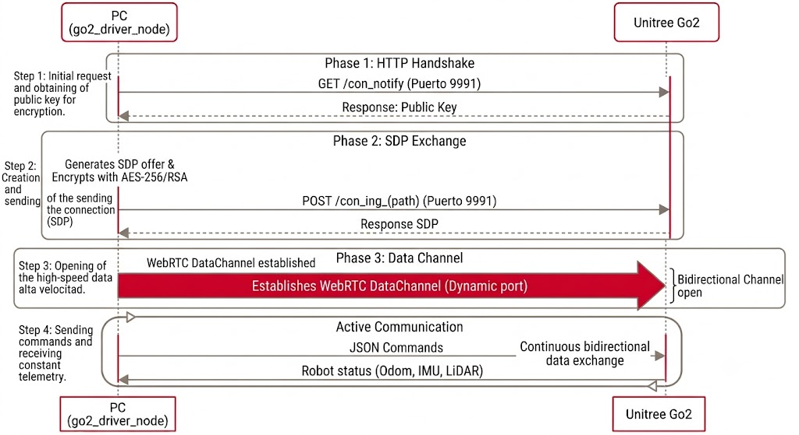
Figura 11: Secuencia de handshake WebRTC entre el PC (go2_driver_node) y el Unitree Go2. Fase 1: Handshake HTTP (GET /con_notify en puerto 9991, clave pública). Fase 2: Intercambio SDP cifrado con AES-256/RSA (POST /con_ing_(path)). Fase 3: Establecimiento de DataChannel WebRTC bidireccional para comandos y telemetría.
Estructura de los Comandos JSON
Cada comando se envía como un mensaje JSON sobre el canal de datos WebRTC:
{
"type": "msg",
"topic": "rt/api/sport/request",
"data": {
"header": {
"identity": {
"id": 12345,
"api_id": 1009
},
"policy": {
"priority": 0,
"noreply": true
}
},
"parameter": "{}",
"binary": []
}
}Campos Clave
| Campo | Descripción |
|---|---|
api_id |
Identificador del comando preprogramado (1001-1304) |
identity.id |
ID de sesión (incremental) |
parameter |
Parámetros adicionales en JSON (normalmente vacío) |
policy.noreply |
true = no esperar respuesta del robot |
topic |
Tópico ROS2 interno del robot |
Canales WebRTC
Aunque el protocolo soporta múltiples canales:
| Canal | Usado en Ronaldo | Propósito |
|---|---|---|
| DataChannel | ✅ Sí | Comandos de control y telemetría |
| Video (H264) | ❌ No | Streaming de cámara |
| Audio | ❌ No | Streaming de audio |
El proyecto utiliza únicamente el canal de datos para enviar instrucciones de movimiento.
4.4 Nodos ROS2
Middleware ROS2
El control de movimiento del robot se implementa sobre ROS2 Humble, utilizando CycloneDDS como middleware de comunicación.
Tres Nodos Principales
Los tres nodos ROS2 operan de la siguiente manera (ver diagrama detallado en la sección 2.2):
Nodo 1: go2_driver_node (Driver Principal)
- Mantiene la conexión WebRTC con el robot
- Publica el estado del robot:
- /go2_states — estado general - /odom — odometría - /imu — unidad inercial - /joint_states — posición de articulaciones - /point_cloud2 — nube de puntos del LiDAR
- Se suscribe a:
- /cmd_vel_out — comandos de velocidad Twist - /webrtc_req — comandos preprogramados WebRtcReq
- Envía ambos tipos de comando al robot físico vía WebRTC
Nodo 2: go2_command_executor_node (Ejecutor de Comandos)
- Monitorea el archivo
~/ros2_ws/commands/execute_command.json
- Detecta cambios de
mtimeen el archivo
- Lee el comando y lo traduce a
api_id
- Publica un
WebRtcReqen/webrtc_req
- Espera el resultado y lo escribe en
~/ros2_ws/commands/command_result.json
Nodo 3: go2_route_follower_node (Seguidor de Rutas)
- Monitorea
~/ros2_ws/rutas/command.json
- Recibe comandos
executecon nombre de ruta
- Carga el archivo de ruta JSON
- Ejecuta los pasos secuencialmente:
- Cada paso → comando Twist en /cmd_vel_out - El go2_driver_node lo reenvía al robot
- Escribe progreso en
~/ros2_ws/rutas/status.json
Nodos de Soporte
Además de los tres nodos principales, se lanzan nodos auxiliares:
| Nodo | Función |
|---|---|
robot_state_publisher |
Publica transforms TF del robot |
lidar_to_pointcloud |
Decodifica datos del LiDAR |
pointcloud_to_laserscan |
Convierte nube de puntos a LaserScan |
twist_mux |
Multiplexor de comandos Twist |
Software de Terceros
El sistema de control del robot se basa en dos repositorios principales:
| Repositorio | Contenido |
|---|---|
go2_ros2_sdk |
Nodos ROS2 principales y mensajes personalizados |
unitree_go2_unitree |
Archivos de rutas, comandos y modificaciones al route follower |
4.5 Sistema de Archivos JSON Compartidos
Comunicación vía Archivos
La coordinación entre el agente Python y los nodos ROS2 se realiza mediante archivos JSON en un directorio compartido del workspace. Este mecanismo fue elegido por su simplicidad y robustez: elimina la necesidad de sincronización compleja entre procesos y permite que ambos lados operen de forma asíncrona.
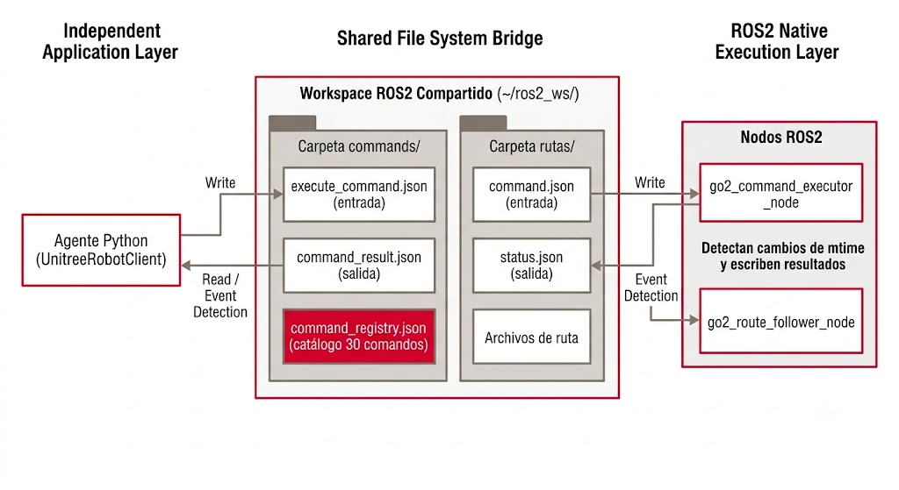
Figura 13: Flujo de comunicación mediante archivos JSON entre el agente Python (UnitreeRobotClient) y los nodos ROS2. El UnitreeRobotClient escribe execute_command.json y command.json; monitorea command_result.json y status.json. Los nodos go2_command_executor_node y go2_route_follower_node detectan cambios de mtime y escriben resultados. Todo ocurre en el workspace compartido ~/ros2_ws/.
Archivos de Comandos
execute_command.json (Entrada)
El UnitreeRobotClient escribe el comando a ejecutar:
{
"command": "sit",
"timestamp": "2026-05-15T14:30:00.000Z"
}command_result.json (Salida)
El go2_command_executor_node escribe el resultado:
{
"status": "completed",
"command": "sit",
"execution_time_ms": 1800,
"timestamp": "2026-05-15T14:30:02.000Z"
}command_registry.json (Catálogo)
Registro de los 30 comandos disponibles:
{
"sit": {
"api_id": 1009,
"topic": "rt/api/sport/request",
"parameter": {},
"description": "Sentarse",
"requires_stand": true,
"duration_estimate": 2.0
}
}Archivos de Rutas
command.json (Entrada)
Especifica qué ruta ejecutar:
{
"command": "execute",
"route": "ruta_lab_a_maquinas.json"
}status.json (Salida)
Progreso en tiempo real:
{
"state": "running",
"current_step": 1,
"total_steps": 3,
"progress": 0.33,
"current_action": "move_forward",
"timestamp": "2026-05-15T14:30:00.000Z"
}Estados de la Ruta
| Estado | Significado |
|---|---|
init |
Inicializando |
idle |
Esperando comando |
running |
Ejecutando pasos |
pause |
Pausado |
completed |
Ruta finalizada |
emergency_stop |
Detención de emergencia |
route_complete |
Secuencia de rutas completa |
4.6 Rutas de Navegación
Estructura de una Ruta
Cada ruta se define en un archivo JSON con una secuencia de pasos de movimiento. Un archivo de ruta típico:
[
{
"type": "move_forward",
"distance": 6.1,
"speed": 0.5,
"timeout": 30.0
},
{
"type": "turn",
"angle_deg": -83.0,
"speed": 50.0,
"mode": "time",
"timeout": 15.0
},
{
"type": "move_forward",
"distance": 4.0,
"speed": 0.6,
"timeout": 20.0
},
{
"type": "stop"
}
]Tipos de Paso Soportados
| Tipo | Descripción | Parámetros |
|---|---|---|
move_forward |
Avance lineal | distance (m), speed (m/s), timeout (s) |
move_backward |
Retroceso lineal | distance (m), speed (m/s), timeout (s) |
strafe_left |
Desplazamiento lateral izquierdo | distance (m), speed (m/s), timeout (s) |
strafe_right |
Desplazamiento lateral derecho | distance (m), speed (m/s), timeout (s) |
turn |
Giro en el lugar | angle_deg (°), speed (°/s), mode, timeout (s) |
wait |
Espera | duration (s) |
stop |
Detención total | Ninguno |
Modos de Ejecución
Dado que la odometría interna del robot no siempre está disponible (especialmente después de ejecutar trucos), las rutas pueden operar en dos modos:
Modo Odométrico
- Utiliza la retroalimentación de posición (
/odom)
- Movimientos se detienen al alcanzar la distancia/ángulo exacto
- Más preciso
Modo Temporal
- Movimientos ejecutados por duración estimada
- Calcula tiempo = distancia / velocidad
- Estrategia de fallback cuando la odometría no está disponible
Diagrama Esquemático de Rutas
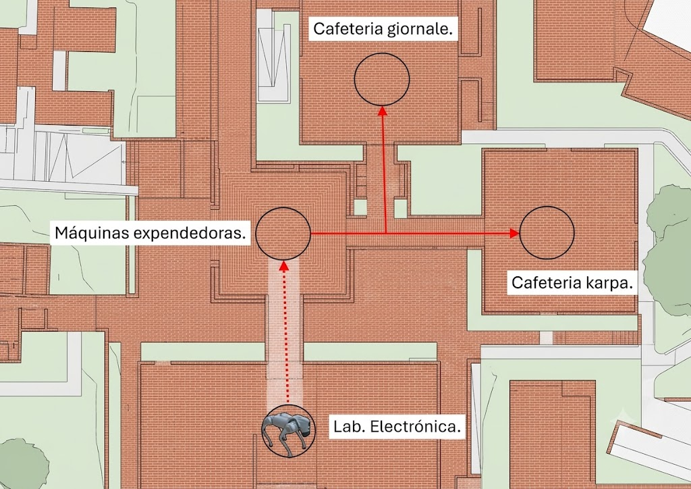
Figura 14: Mapa esquemático de rutas del robot en el campus universitario. Laboratorio de Robótica (punto de partida) → Edificio de Máquinas (move_forward 6.1m, turn -83°). Desde Máquinas: La Karpa (turn +45°), Giornale (turn -45°), Biblioteca F.X. Clavijero (strafe_left + turn), Biomédica (move_forward 4m, turn -90°).
Este diagrama es una representación esquemática. Para el mapa real del campus con las rutas del robot, consulta la imagen de rutas en la sección de evidencia visual.
Secuencias de Rutas
Para llegar a un destino lejano, se concatenan múltiples archivos de ruta. El archivo config/robot_routes.yaml define estas secuencias:
destinations:
LA_KARPA:
- ruta_lab_a_maquinas.json
- ruta_maquinas_a_karpa.json
GIORNALE:
- ruta_lab_a_maquinas.json
- ruta_maquinas_a_giornale.json
BIBLIOTECA:
- ruta_lab_a_maquinas.json
- ruta_maquinas_a_biblioteca.jsonNota sobre las Pruebas de Navegación
4.7 Comandos Preprogramados
Los 30 Comandos del Unitree Go2
El fabricante proporciona 30 comandos preprogramados organizados en cuatro categorías. Cada comando se identifica mediante un api_id numérico.
Categoría 1: Postura
| api_id | Comando | Descripción | Requiere Stand | Duración Est. |
|---|---|---|---|---|
| 1001 | Damp | Desactivar motores (modo libre) | No | 1.0 s |
| 1002 | BalanceStand | Equilibrio sobre dos patas | No | 2.0 s |
| 1003 | StopMove | Detener todo movimiento | No | 0.5 s |
| 1004 | StandUp | Pararse sobre cuatro patas | No | 2.0 s |
| 1005 | StandDown | Acostarse en el suelo | Sí | 2.0 s |
| 1009 | Sit | Sentarse | Sí | 2.0 s |
Categoría 2: Movimiento
| api_id | Comando | Descripción | Requiere Stand | Duración Est. |
|---|---|---|---|---|
| 1008 | Move | Velocidad continua (cmd_vel) | Sí | Indefinido |
Categoría 3: Trucos y Animaciones
| api_id | Comando | Descripción | Requiere Stand | Duración Est. |
|---|---|---|---|---|
| 1016 | Hello | Saludo con la pata | No | 3.0 s |
| 1022 | Dance1 | Baile coreografiado 1 | No | 8.0 s |
| 1023 | Dance2 | Baile coreografiado 2 | No | 8.0 s |
| 1025 | Heart | Figura de corazón | No | 5.0 s |
| 1030 | FrontFlip | Voltereta hacia adelante | No | 3.0 s |
| 1031 | FrontJump | Salto hacia adelante | No | 2.0 s |
| 1301 | Handstand | Parada de manos | No | 5.0 s |
| 1304 | Bound | Saltos consecutivos | No | 4.0 s |
Categoría 4: Consultas de Estado
| api_id | Comando | Descripción |
|---|---|---|
| (varios) | Estado del robot | Consulta de batería, posición, velocidad, etc. |
Mapeo de Intents a Comandos
El archivo config/robot_routes.yaml asocia los intents del clasificador con los comandos del robot:
command_intents:
COMANDO_SIT: "sit"
COMANDO_STAND_UP: "stand_up"
COMANDO_STAND_DOWN: "stand_down"
COMANDO_DANCE: "dance1"
COMANDO_HELLO: "hello"
COMANDO_STOP: "stop"Flujo de Ejecución de un Comando
El flujo completo de ejecución de un comando preprogramado sigue esta secuencia:
- El usuario dice "Ronaldo, siéntate"
- El Agente (Orquestador) usa el clasificador YAML para detectar
COMANDO_SIT
- Se publica el evento
ROBOT_COMMANDen el EventBus
- El
UnitreeRobotProcessrecibe el evento y ordena ejecutar "sit"
- El
UnitreeRobotClientescribeexecute_command.jsoncon{"command": "sit"}
- El nodo
go2_command_executordetecta el cambio de mtime y publica unWebRtcReqconapi_id=1009
- El
go2_driver_nodeenvía el comando al robot vía WebRTC DataChannel
- El robot ejecuta la acción de sentarse (~2 segundos)
- Se escribe
command_result.jsoncon{"status": "completed"}
- Se publica el evento
MOVEMENT_COMPLETED— el sistema está listo para el siguiente comando
Tiempos de Ejecución
| Tipo de Comando | Tiempo Aproximado |
|---|---|
| Postura (sit, stand) | ~2 segundos |
| Animación (dance, hello) | 3-8 segundos |
| Ruta de navegación corta | 10-30 segundos |
4.8 Mapeo de Destinos y Comandos
El Archivo robot_routes.yaml
El archivo config/robot_routes.yaml es el punto central de configuración que cumple dos funciones de mapeo:
1. Mapeo de Destinos de Navegación a Rutas
Asocia cada destino del campus con una secuencia de archivos de ruta JSON:
destinations:
LA_KARPA:
- ruta_lab_a_maquinas.json
- ruta_maquinas_a_karpa.json
GIORNALE:
- ruta_lab_a_maquinas.json
- ruta_maquinas_a_giornale.json
BIBLIOTECA:
- ruta_lab_a_maquinas.json
- ruta_maquinas_a_biblioteca.json
BIOMEDICA:
- ruta_lab_a_maquinas.json
- ruta_maquinas_a_biomedica.json
LAB_ROBOTICA:
- ruta_vuelta_al_lab.jsonDestinos Soportados
| Destino | # de Rutas | Complejidad |
|---|---|---|
| La Karpa (cafetería) | 2 rutas | Media |
| Giornale (edificio) | 2 rutas | Media |
| Biblioteca F.X. Clavijero | 2 rutas | Media |
| Biomédica | 2 rutas | Media |
| Edificio de Máquinas | 1 ruta | Baja |
| Laboratorio de Robótica | 1 ruta | Baja |
| (otro destino) | variable | variable |
2. Mapeo de Intents del Agente a Comandos del Robot
Asocia cada intent de comando reconocido por el clasificador YAML con su identificador de comando:
command_intents:
COMANDO_SIT: "sit"
COMANDO_STAND_UP: "stand_up"
COMANDO_STAND_DOWN: "stand_down"
COMANDO_DANCE: "dance1"
COMANDO_DANCE2: "dance2"
COMANDO_HELLO: "hello"
COMANDO_STOP: "stop"
COMANDO_FRONT_FLIP: "front_flip"
COMANDO_FRONT_JUMP: "front_jump"
COMANDO_HANDSTAND: "handstand"
COMANDO_BOUND: "bound"
COMANDO_HEART: "heart"Flujo de Resolución de Ruta
El proceso de resolución de ruta desde una intención de navegación sigue estos pasos:
- Se detecta la intención (ej.
NAVEGAR_KARPA)
- Se consulta
robot_routes.yamlpara resolver la secuencia de rutas:ruta_lab_a_maquinas.json→ruta_maquinas_a_karpa.json
- Para cada ruta en la secuencia:
- Se escribe command.json en el workspace ROS2 - Se espera a que status.json indique completed - Se pasa a la siguiente ruta
- Al completar todas las rutas, se publica
MOVEMENT_COMPLETED
Precisión del Mapeo
En las pruebas de la Fase 2, se verificó que:
- Los 7 destinos definidos en el clasificador YAML tienen su correspondiente mapeo en el sistema
- La precisión de mapeo de destinos es del 100%
- Cada intent de navegación se resuelve correctamente a una secuencia de rutas válida
5. Integración con la UIA
Este capítulo describe cómo Ronaldo se integra con el campus de la Universidad Iberoamericana: los destinos soportados, la información consultable a través del servidor MCP y los escenarios de uso típicos.
5.1 Destinos Soportados
Puntos de Navegación en el Campus
Ronaldo puede guiar a los visitantes a los siguientes destinos dentro del campus de la Universidad Iberoamericana:
| Destino | Categoría | Descripción |
|---|---|---|
| Laboratorio de Robótica | Laboratorio | Punto de partida y base del robot |
| Edificio de Máquinas | Laboratorio | Taller de manufactura |
| La Karpa | Cafetería | Cafetería principal del campus |
| Giornale | Edificio | Edificio con restaurantes (Tacos Don Julio, Sushi Nagoya) |
| Biblioteca F.X. Clavijero | Biblioteca | Biblioteca principal |
| Biomédica | Laboratorio | Laboratorio de ingeniería biomédica |
| Aulas Generales | Aulas | Edificio de salones |
Información Complementaria
Además de la navegación física, Ronaldo puede proporcionar información sobre:
- Horarios de apertura y cierre de cada instalación
- Servicios disponibles en cada ubicación
- Descripciones de los lugares
- Rutas alternativas cuando están disponibles
Limitación Actual
5.2 Información Consultable
Base de Datos del Campus (vía MCP)
A través del servidor MCP, Ronaldo puede consultar información estructurada sobre el campus en 5 categorías:
1. Lugares (search_places)
Información sobre ubicaciones físicas del campus:
- Nombre del lugar
- Tipo (cafetería, aula, laboratorio, auditorio, oficina, tienda, baño)
- Ubicación (edificio, piso)
- Horario de operación
- Servicios disponibles
- Capacidad
2. Comida (search_food)
Información sobre opciones gastronómicas:
- Restaurantes y cafeterías
- Menús del día
- Tipos de comida disponibles
- Precios
- Horarios de servicio
3. Tiendas (search_products)
Información sobre productos y tiendas:
- Productos disponibles en tiendas del campus
- Precios
- Inventario
- Ubicación de la tienda
4. Servicios (search_services)
Información administrativa y de servicios:
- Oficinas de profesores
- Ubicación de departamentos
- Puertas de acceso y horarios
- Servicios estudiantiles
5. Contexto (campus_context)
Información general del campus:
- Resumen del campus
- Niveles de afluencia por horario
- Eventos programados
- Búsqueda en documentos institucionales
Ejemplos de Consultas
| Pregunta del Usuario | Tool MCP Invocada |
|---|---|
| "¿Qué hay para comer?" | search_food |
| "¿Dónde está la oficina del Dr. López?" | search_services |
| "¿A qué hora cierra la biblioteca?" | search_places |
| "¿Hay máquinas expendedoras cerca?" | search_products |
| "¿Qué lugares están abiertos a esta hora?" | search_places + campus_context |
5.3 Escenarios de Uso
Casos de Uso Típicos
Ronaldo está diseñado para asistir a diferentes tipos de visitantes en el campus de la UIA. El sistema es genérico y puede adaptarse a cualquier ubicación; estos escenarios ilustran su aplicación en el contexto universitario como primer caso de validación.
1. Visitante de Primera Vez
El caso más común y relevante: una persona que nunca antes ha pisado el campus y necesita orientación completa. Ronaldo no solo indica direcciones, sino que acompaña físicamente al visitante hasta su destino.
Visitante: "Ronaldo, es mi primera vez aquí. ¿Dónde está
la coordinación de Ingeniería Mecatrónica?"
Ronaldo: [search_places("coordinación ingeniería mecatrónica")]
"¡Bienvenido a la IBERO! La coordinación está en el
edificio de Ingenierías. ¿Te gustaría que te lleve?"
Visitante: "Sí, por favor. No conozco nada."
Ronaldo: [navigate_to("INGENIERIAS")]
"No te preocupes, sígueme. En el camino te voy contando
sobre los edificios que vamos pasando."2. Aspirante de Nuevo Ingreso
Visitante: "Ronaldo, ¿me puedes dar un tour por la universidad?"
Ronaldo: "¡Claro! Empecemos por el Laboratorio de Robótica.
¿Te gustaría que te lleve a conocer la biblioteca?"
Visitante: "Sí, por favor."
Ronaldo: [navigate_to("BIBLIOTECA")]
"Sígueme. La Biblioteca F.X. Clavijero tiene horario
de 7:00 a 22:00 y cuenta con salas de estudio."3. Padre de Familia en Día de Admisión
Visitante: "Ronaldo, ¿dónde puedo comprar un café?"
Ronaldo: [search_places("café")]
"La Karpa es la cafetería principal. También hay
Cafe Borrego en el edificio Giornale.
¿Te gustaría que te lleve a La Karpa?"
Visitante: "Sí, vamos."
Ronaldo: [navigate_to("LA_KARPA")]4. Estudiante Visitante para Competencia
Visitante: "Ronaldo, necesito ir al laboratorio de máquinas"
Ronaldo: [navigate_to("MAQUINAS")]
"¡Vamos al edificio de máquinas! Sígueme."5. Visitante Casual
Visitante: "Ronaldo, ¿qué hay para comer hoy?"
Ronaldo: [search_food()]
"Hoy hay varias opciones: Tacos Don Julio en Giornale,
sushi en Sushi Nagoya, y ensaladas en La Karpa.
¿Te gustaría ir a alguno?"
Visitante: "Quiero tacos."
Ronaldo: [navigate_to("GIORNALE")]
"¡Excelente elección! Te llevo a Tacos Don Julio."6. Demostración de Capacidades
Visitante: "Ronaldo, saluda."
Ronaldo: [COMANDO_HELLO → api_id 1016]
"¡Hola! Soy Ronaldo, tu guía en la IBERO."
Visitante: "Ronaldo, baila."
Ronaldo: [COMANDO_DANCE → api_id 1022]
(ejecuta coreografía de baile)
"¿Te gustó? Ahora dime, ¿a dónde quieres ir?"6. Experimentación y Resultados
Este capítulo presenta la metodología de pruebas y los resultados obtenidos en las cuatro fases de experimentación, siguiendo los estándares IEEE 29119-1, ISO 25022 e ISO 25023.
6.1 Configuración de Pruebas
Hardware de Pruebas
Ronaldo fue probado en el siguiente equipo:
| Componente | Especificación |
|---|---|
| Equipo | HP Laptop 14-dq2xxx |
| Procesador | Intel Core i5-1135G7 (8 núcleos) |
| RAM | 12 GB |
| Sistema Operativo | Ubuntu 24.04 LTS |
APIs Cloud Utilizadas
Las pruebas se realizaron contra las API reales de los proveedores, utilizando sus capas gratuitas:
| Servicio | Modelo | Función |
|---|---|---|
| Groq API | whisper-large-v3-turbo |
STT |
| Groq API | meta-llama/llama-4-scout-17b-16e-instruct |
LLM |
| Deepgram | Aura-2 | TTS (alternativo) |
| Edge TTS | Microsoft Edge | TTS (por defecto) |
Importante
Organización de las Pruebas
Las pruebas se organizaron en cuatro fases, cada una evaluando una dimensión específica:
| Fase | Dimensión | Estándar Aplicado |
|---|---|---|
| Fase 1 — Guardrails | Seguridad y estructura | OWASP ASVS v4.0 |
| Fase 2 — Clasificación | Exactitud funcional | ISO 25023 |
| Fase 3 — Rendimiento | Eficiencia | ISO 25022 |
| Fase 4 — Operación | Eficiencia de recursos | ISO 25023 |
6.2 Tabla Global de Resultados
Resumen Consolidado de las Cuatro Fases
| Fase | Prueba | Métrica | Resultado |
|---|---|---|---|
| F1 — Guardrails | Validez de Tool Calling | Tasa de validez | 100% |
| F1 — Guardrails | Corrección de parámetros | Intervenciones | 10/8 detectadas |
| F1 — Guardrails | Falsos positivos críticos | Tasa de FP | 0% |
| F2 — Clasificación | Navegación (YAML) | Recall | 100% |
| F2 — Clasificación | Comandos (YAML) | Recall | 80% |
| F2 — Clasificación | Mapeo de destinos | Precisión | 100% |
| F3 — Rendimiento | STT Latency | Promedio | 750 ms |
| F3 — Rendimiento | LLM Latency | Promedio | 350 ms |
| F3 — Rendimiento | ToolValidator | Overhead | 0.004 ms |
| F3 — Rendimiento | EventBus Stress | Entrega | 100% / 1,300 ev/s |
| F4 — Operación | RAM pico | Máximo | 85.7 MB |
| F4 — Operación | CPU idle | Promedio | 0.7% |
| F4 — Operación | Viabilidad RPi5 | RAM usada vs disp. | 1.0% |
Hallazgos Clave
- Tool calling 100% válido: el LLM nunca generó sintaxis de herramientas inválida
- Cero falsos positivos en navegación: el robot nunca intentó moverse cuando el usuario solo conversaba
- Recall perfecto en navegación: el clasificador YAML detectó correctamente el 100% de los comandos de navegación
- Latencia total aceptable: ~1.6 segundos de extremo a extremo (voz → respuesta audible)
- Consumo mínimo de recursos: solo 85.7 MB de RAM pico (1% de una Raspberry Pi 5)
6.3 Fase 1 — Guardrails (Seguridad)
Objetivo
Verificar que el agente invoca herramientas únicamente cuando es adecuado, que los parámetros de las herramientas son correctos, y que no se producen falsos positivos críticos (como intentar navegar cuando el usuario solo está conversando).
Estándar de referencia: OWASP ASVS v4.0.
Prueba 1A: Tasa de Validez de Tool Calling
Se construyó un conjunto de 49 prompts en español distribuidos en cinco categorías: navegación, comandos de robot, conversación general, consultas ambiguas y ruido.
Resultados
| Métrica | Valor |
|---|---|
| Prompts procesados | 49 |
| Prompts con tool calls | 13 (26.5%) |
| Respuestas válidas | 49 |
| Tasa de validez | 100.0% |
| Errores de sintaxis raw | 0 |
navigate_to. Los prompts de ruido y conversación produjeron respuestas de texto limpio sin sintaxis residual de herramientas incrustadas.
Prueba 1B: Corrección de Parámetros
Se definieron 9 casos de prueba que cubren herramientas válidas, parámetros faltantes, tipos incorrectos, valores nulos, herramientas desconocidas y combinaciones múltiples.
Resultados
| Caso | Correcciones Esperadas | Obtenidas | Estado |
|---|---|---|---|
| Comando válido | 0 | 0 | ✅ PASS |
| Falta query requerido | 1 | 1 | ✅ PASS |
| Tipo de lugar inválido | 1 | 1 | ✅ PASS |
| Destino vacío | 1 | 2 | ✅ PASS* |
| Herramienta desconocida | 1 | 1 | ✅ PASS |
| Query es None | 1 | 1 | ✅ PASS |
| Nombre no es string | 1 | 1 | ✅ PASS |
| Múltiples válidas | 0 | 0 | ✅ PASS |
| Múltiples con errores | 2 | 3 | ✅ PASS* |
| Total | 8 | 10 | ✅ PASS |
Prueba 1C: Falsos Positivos Críticos
Se evaluaron 29 prompts de categorías seguras (conversación, ambigua y ruido) contra el LLM con tool calling completo.
Resultado
0% de falsos positivos — Ningún prompt activó navigate_to cuando no debía.
6.4 Fase 2 — Clasificación de Intención
Objetivo
Evaluar la capacidad del sistema híbrido (clasificador YAML + LLM con tool calling) para distinguir correctamente entre intenciones de navegación, comandos de robot, conversación general y ruido acústico.
Estándar de referencia: ISO 25023 — exactitud funcional.
Matriz de Confusión
Se evaluaron 40 frases etiquetadas en cuatro categorías.
| Esperado \ Asignado | Navegación | Comando | Conversación | Ruido |
|---|---|---|---|---|
| Navegación (10) | 10 | 0 | 0 | 0 |
| Comando (10) | 0 | 8 | 2 | 0 |
| Conversación (10) | 3 | 0 | 7 | 0 |
| Ruido (10) | 0 | 1 | 9 | 0 |
Métricas por Clase
| Clase | Precisión | Recall | F1-Score |
|---|---|---|---|
| Navegación | 0.7692 | 1.0000 | 0.8696 |
| Comando | 0.8889 | 0.8000 | 0.8421 |
| Conversación | 0.5556 | 0.7692 | 0.6452 |
| Ruido | 0.0000 | 0.0000 | 0.0000 |
Análisis
Navegación — Recall Perfecto
La categoría más crítica para la seguridad del sistema obtuvo un recall del 100%. Esto significa que el sistema nunca dejó de reconocer un comando de navegación cuando el usuario realmente quería moverse.
Comandos — Recall del 80%
Dos comandos fueron clasificados erróneamente como conversación. Esto se debe a que el clasificador YAML es determinista y depende de patrones exactos; frases con variaciones léxicas no capturadas en los patrones caen en la segunda etapa (LLM).
Conversación — 3 falsos positivos de navegación
Tres frases de conversación fueron interpretadas como navegación porque contenían nombres de lugares del campus. El clasificador YAML las detectó como patrones de navegación antes de que el LLM pudiera analizar el contexto completo.
Ruido — Diseñado para ser Permeable
Verificación Adicional: Mapeo de Destinos
Se verificó que los 7 destinos definidos en el clasificador YAML tienen su correspondiente mapeo interno con una precisión del 100%.
6.5 Fase 3 — Rendimiento
Objetivo
Medir la latencia individual de cada componente del pipeline y la capacidad de throughput del bus de eventos.
Estándar de referencia: ISO 25022 — eficiencia en uso.
Latencia de STT (Groq Whisper)
| Métrica | Tiempo (ms) |
|---|---|
| Promedio | 750.7 |
| Mediana (P50) | 708.2 |
| P95 | 1025.0 |
| Máximo | 1025.0 |
Latencia del LLM (Groq Llama 4 Scout)
| Complejidad | Latencia (ms) | Caracteres | Throughput (chars/s) |
|---|---|---|---|
| Simple | 343.2 | 5 | 14.6 |
| Media | 358.0 | 78 | 218.8 |
Overhead del ToolValidator
1,000 iteraciones, lote de 5 tools:
| Métrica | Tiempo (ms) |
|---|---|
| Promedio | 0.004 |
| Mediana (P50) | 0.004 |
| P95 | 0.005 |
| Máximo (P99) | 0.026 |
Desglose de Latencia Total del Pipeline
| Etapa | Tiempo (ms) |
|---|---|
| STT (Groq Whisper) | 750 |
| LLM (Groq Llama 4 Scout) | 350 |
| ToolValidator | < 0.01 |
| TTS (Edge TTS, estimado) | 500 |
| Total estimado | ~1,600 ms |
Prueba de Estrés del EventBus
Un proceso publicador envió 100 eventos secuencialmente a un proceso consumidor.
| Métrica | Valor |
|---|---|
| Eventos enviados | 100 |
| Eventos recibidos | 100 |
| Pérdidas | 0 |
| Fuera de orden | 0 |
| Tiempo total | 76.9 ms |
| Throughput | 1,300 eventos/s |
| Resultado | ✅ PASS |
6.6 Fase 4 — Operación y Recursos
Objetivo
Monitorear el consumo de CPU y RAM del sistema en distintos estados operativos para determinar la viabilidad de ejecutarlo en hardware de bajo costo.
Estándar de referencia: ISO 25023 — eficiencia de recursos.
Consumo de Recursos por Estado
| Estado | CPU avg (%) | CPU max (%) | RAM avg (MB) | RAM max (MB) |
|---|---|---|---|---|
| Idle | 0.7 | 10.0 | 23.5 | 23.5 |
| Procesamiento | 0.2 | 10.0 | 45.7 | 45.7 |
| Reproducción | 0.0 | 0.0 | 85.7 | 85.7 |
Comparativa: Ronaldo vs Raspberry Pi 5
| Métrica | Ronaldo | RPi5 Disponible | % Usado |
|---|---|---|---|
| RAM pico | 85.7 MB | 8,192 MB | 1.0% |
| RAM en idle | 23.5 MB | 8,192 MB | 0.3% |
| CPU pico | 10% (1 núcleo) | 4 núcleos Cortex-A76 | 2.5% |
Conclusión de Viabilidad
¿Por Qué Tan Poco Consumo?
El bajo consumo de recursos se debe a que el procesamiento intensivo se ejecuta en servidores remotos:
- STT → servidores Groq
- LLM → servidores Groq
- TTS → servidores Microsoft Edge / Deepgram
El hardware local solo necesita:
- Gestionar E/S de red
- Ejecutar Vosk (wake word offline, 42 MB)
- Ejecutar Silero VAD (offline)
- Reproducir audio
- Monitorear archivos JSON del workspace ROS2
Monitoreo con psutil
El monitoreo se realizó con la librería psutil (v7.2.2) midiendo CPU y RAM cada segundo durante los tres estados operativos:
- Idle: sistema en espera, escuchando wake word
- Procesamiento: sistema transcribiendo audio y consultando LLM
- Reproducción: sistema reproduciendo respuesta TTS
6.7 Integración con el Robot Físico
Pruebas Cualitativas de Integración
Además de las pruebas cuantitativas de las cuatro fases, se realizaron pruebas cualitativas de la integración con el robot físico Unitree Go2 Air.
Comandos Preprogramados
Se verificó la correcta ejecución de los 30 comandos preprogramados del robot a través del pipeline completo: desde la activación por voz hasta el movimiento físico.
| Tipo de Comando | Resultado |
|---|---|
| Postura (sentarse, pararse, acostarse) | ✅ Ejecución confiable |
| Animación (saludar, bailar) | ✅ Ejecución confiable |
| Trucos (voltereta, salto) | ✅ Ejecución confiable |
Rutas de Navegación
La ejecución de rutas se probó con éxito para los destinos mapeados desde el Laboratorio de Robótica:
| Aspecto | Observación |
|---|---|
| Transiciones entre pasos | Suaves, sin pausas notables |
| Precisión de giros | Aceptable (modo temporal como fallback) |
| Detención al finalizar | Correcta |
Tiempos de Ejecución
| Tipo de Acción | Tiempo Aproximado |
|---|---|
| Comando de postura | ~2 segundos |
| Comando de animación | 3-8 segundos |
| Ruta de navegación corta | 10-30 segundos |
Estabilidad de Red
| Modo | Duración Máxima de Prueba | Pérdida de Paquetes |
|---|---|---|
| STA (WiFi compartido) | ~30 minutos | No significativa |
Observaciones
- El modo STA de conexión WiFi demostró ser estable para sesiones prolongadas
- La odometría no siempre está disponible después de ejecutar trucos o animaciones
- El comando
Move(api_id 1008, velocidad continua) requiere control por Twist que no estaba completamente integrado
- El robot requiere aproximadamente 2 segundos para completar comandos de postura
Evidencia Visual
[Aquí se insertarán fotos y videos del robot en operación]
7. Limitaciones y Trabajo Futuro
Limitaciones Identificadas
1. Ausencia de SLAM
La limitación más significativa es la ausencia de un sistema de Localización y Mapeo Simultáneos (SLAM). En la configuración actual:
- Las rutas son predefinidas y asumen que el robot siempre parte del Laboratorio de Robótica
- No hay capacidad de navegación dinámica desde cualquier punto del campus
- No hay detección ni evasión de obstáculos en tiempo real
2. Navegación con Origen Fijo
Todas las rutas asumen inicio desde el Laboratorio de Robótica. No hay rutas desde otros orígenes, lo que limita el caso de uso a un "tour guiado" desde un punto fijo.
3. Odometría No Confiable
| Situación | Disponibilidad de Odometría |
|---|---|
| Operación normal | ✅ Disponible |
| Después de trucos (FrontFlip, Dance) | ❌ No disponible |
| Después de movimientos bruscos | ❌ No disponible |
Cuando la odometría no está disponible, las rutas operan en modo temporal (duración estimada), lo que reduce la precisión.
4. Comandos de Movimiento Continuo
El comando Move (api_id 1008) no está completamente mapeado:
- Requiere control por velocidad (
cmd_vel)
- No implementado para comandos de voz al momento de las pruebas
5. Sin Pruebas con Usuarios Reales
Las pruebas se realizaron con datos simulados y prompts predefinidos. No se realizaron pruebas de usabilidad con visitantes reales del campus.
Líneas de Trabajo Futuro
| Prioridad | Tarea | Impacto |
|---|---|---|
| Alta | Integrar SLAM (RTAB-Map o Cartographer) | Navegación dinámica desde cualquier punto |
| Alta | Implementar detección y evasión de obstáculos | Seguridad en entornos con personas |
| Alta | Pruebas con usuarios reales en el campus | Validación de usabilidad |
| Media | Rutas desde cualquier origen (no solo Lab Robótica) | Flexibilidad de uso |
| Media | Mejorar clasificador de comandos (YAML más robusto) | Recall de 80% → 95%+ |
| Media | Completar integración del comando Move |
Movimiento continuo por voz |
| Media | Migración a modelos locales (offline total) | Operación sin internet |
| Baja | Soporte multilingüe (inglés, francés) | Visitantes internacionales |
| Baja | Integración con calendario académico | Información de eventos en tiempo real |
8. Recursos
Repositorios, documentación y referencias del proyecto Ronaldo.
8.1 Repositorio del Proyecto
Código Fuente
El código fuente completo de Ronaldo está disponible en GitHub:
Estructura del Repositorio
| Directorio | Contenido |
|---|---|
src/prospectiva/ |
Código fuente principal del agente |
src/prospectiva/bus/ |
Implementación del EventBus |
src/prospectiva/procesos/ |
Los 4 procesos (audio, orquestador, playback, robot) |
src/prospectiva/procesos/actions/ |
Ejecutor de acciones (navegación, comandos) |
src/prospectiva/modulos/ |
Módulos (STT, TTS, LLM, clasificador, VAD) |
src/prospectiva/utils/ |
Utilidades (MCP client, memory, tool validator) |
src/prospectiva/interfaces/ |
Interfaces abstractas |
config/ |
Archivos de configuración YAML |
scripts/ |
Scripts de utilidad y pruebas |
tests/ |
Pruebas unitarias y de integración |
tests/results/ |
Resultados de las 4 fases de prueba (JSON) |
models/ |
Modelos offline (Vosk) |
8.2 SDKs y Dependencias
Repositorios de Terceros Utilizados
Control del Robot
| Repositorio | Descripción |
|---|---|
| go2_ros2_sdk | SDK ROS2 para Unitree Go2. Proporciona los 3 nodos principales y mensajes personalizados |
| unitree_go2_unitree | Control personalizado. Archivos de rutas, comandos y modificaciones al route follower |
APIs Cloud
| Servicio | Documentación |
|---|---|
| Groq API | console.groq.com/docs |
| Deepgram | developers.deepgram.com |
Modelos Offline
| Modelo | Documentación |
|---|---|
| Vosk | alphacephei.com/vosk |
| Silero VAD | github.com/snakers4/silero-vad |
Especificaciones
| Especificación | Enlace |
|---|---|
| MCP (Model Context Protocol) | modelcontextprotocol.io |
| Unitree Go2 | unitree.com |
| Llama 4 | llama.com |
Dependencias Python
| Paquete | Propósito |
|---|---|
vosk |
Wake word offline |
silero-vad |
Voice Activity Detection |
edge-tts |
TTS gratuito (Microsoft Edge) |
groq |
API Groq (STT + LLM) |
deepgram-sdk |
API Deepgram (alternativa STT/TTS) |
psutil |
Monitoreo de recursos |
pyyaml |
Configuración (clasificador, rutas) |
httpx |
Cliente HTTP async |
8.3 APIs y Servicios
Configuración de APIs
Las APIs se configuran mediante variables de entorno definidas en un archivo .env:
# Groq API (STT + LLM)
GROQ_API_KEY=your_key_here
# Deepgram API (STT + TTS alternativo)
DEEPGRAM_API_KEY=your_key_here
# Google Cloud (STT alternativo)
GOOGLE_APPLICATION_CREDENTIALS=path/to/credentials.json
# MCP Server
MCP_SERVER_URL=http://localhost:8000
MCP_TOKEN=your_token_hereCapas Gratuitas (Free Tier)
| Servicio | Límite Gratuito | Suficiente para |
|---|---|---|
| Groq | Generoso (consultas/día) | ✅ Todas las pruebas y operación normal |
| Deepgram | Créditos iniciales | ✅ Pruebas de calidad |
| Edge TTS | Sin límite conocido | ✅ Uso ilimitado |
| Google Cloud | $300 crédito inicial | ⚠️ Consumo monitoreado |
Modelos Utilizados
| Modelo | Proveedor | Parámetros | Uso |
|---|---|---|---|
whisper-large-v3-turbo |
Groq | - | STT |
llama-4-scout-17b-16e-instruct |
Groq | 17B | LLM |
vosk-model-small-es-0.42 |
Vosk | - | Wake word |
silero-vad |
Silero | - | VAD |
8.4 Referencias
Artículos y Documentación
- P. Marín et al., "Voice Control of a TurtleBot Using Speech Recognition and Natural Language Processing," in Proc. IEEE Int. Conf. on Autonomous Robot Systems and Competitions, 2020.
- S. Shankar et al., "Design and Deployment of a Guide Robot for Airport Terminals," in Proc. IEEE Int. Conf. on Robotics and Automation, 2021.
- Unitree Robotics, "Go2 Robot Dog User Manual," 2023. unitree.com
- N. Abizov, "go2_ros2_sdk: ROS2 SDK for Unitree Go2 Robot," 2024. GitHub
- S. Enguilo, "unitree_go2_unitree: Custom Control for Unitree Go2," 2025. GitHub
- Groq Inc., "Groq API Documentation," 2025. console.groq.com/docs
- Meta, "Llama 4 Model Cards and Prompt Formats," 2025. llama.com
- Deepgram Inc., "Text-to-Speech REST API Documentation," 2025. developers.deepgram.com
- Alpha Cephei, "Vosk Speech Recognition Toolkit," 2023. alphacephei.com/vosk
- Silero Team, "Silero VAD: Pre-trained Enterprise-Grade Voice Activity Detector," 2023. GitHub
- T. Wolf et al., "Transformers: State-of-the-Art Natural Language Processing," in Proc. EMNLP, 2020.
- Hugging Face, "Transformers Documentation v5.7.0," 2025. huggingface.co
Estándares y Protocolos
- Anthropic, "Model Context Protocol Specification," 2025. modelcontextprotocol.io
- OWASP, "Application Security Verification Standard v4.0," 2019.
- ISO/IEC/IEEE, "29119-1:2022 - Software Testing — Part 1: General Concepts," 2022.
- ISO/IEC, "25022:2016 - Measurement of Quality in Use," 2016.
- ISO/IEC, "25023:2016 - Measurement of System and Software Product Quality," 2016.
Evaluación de Agentes LLM
- S. G. Patil et al., "The Berkeley Function Calling Leaderboard (BFCL)," in Proc. NeurIPS, 2024.
- M. Mohammadi, Y. Li, J. Lo, and W. Yip, "Evaluation and Benchmarking of LLM Agents: A Survey," arXiv:2507.21504, 2025.
- "Survey of Emerging Trends in LLM Agent Benchmarking," in Proc. 2025 2nd Symp. on Big Data, Neural Networks, and Deep Learning, 2026.
9. Equipo
Conoce al equipo detrás de Ronaldo: los estudiantes que desarrollaron el proyecto y los profesores que lo asesoraron.
9.1 Integrantes del Equipo
Estudiantes
| Integrante | Programa | Contacto |
|---|---|---|
| Fernando Pérez González | Ingeniería Mecatrónica y Sistemas Ciberfísicos | a2586782@correo.uia.mx |
| Sebastián de Jesús Enguilo Ruiz | Ingeniería Mecatrónica y Sistemas Ciberfísicos | a2586119@correo.uia.mx |
| José Adrián Bazaldua Huerta | Ingeniería Mecatrónica y Sistemas Ciberfísicos | a2264665@correo.uia.mx |
Roles en el Proyecto
| Integrante | Rol Principal | Contribuciones |
|---|---|---|
| Fernando Pérez González | Desarrollo de Software e Infraestructura y Pruebas | Agente conversacional, motor de diálogo, MCP, pruebas, evaluación, monitoreo |
| Sebastián de Jesús Enguilo | Desarrollo de Hardware/Robot: Go2 | Nodos ROS2, rutas, comandos, WebRTC |
| José Adrián Bazaldua | Desarrollo de Software | Agente conversacional, motor de diálogo, documentación |
Asesores
| Profesor | Rol |
|---|---|
| Mtro. Joel Arango Ramírez | Asesor Técnico |
| Dr. Huber Girón Nieto | Asesor Metodológico |
Institución
Universidad Iberoamericana Ciudad de México Departamento de Ingeniería Coordinación de Ingeniería Mecatrónica y Sistemas Ciberfísicos
Semestre: Verano 2026
Agradecimientos
Los autores agradecen a la Universidad Iberoamericana por facilitar los espacios e infraestructura para la realización de las pruebas, al Departamento de Ingeniería por el acompañamiento académico, y a los profesores Joel Arango y Huber Girón por la asesoría técnica y metodológica durante el desarrollo del proyecto.
Asimismo, se agradece a los desarrolladores de las herramientas de código abierto utilizadas: Vosk, Silero VAD, ROS2, go2_ros2_sdk, y a los proveedores de APIs gratuitas: Groq y Deepgram.
9.2 Asesores
Cuerpo Docente
Mtro. Joel Arango Ramírez
- Rol: Asesor Técnico
- Departamento: Ingeniería
- Universidad Iberoamericana, Ciudad de México
Dr. Huber Girón Nieto
- Rol: Asesor Metodológico
- Departamento: Ingeniería
- Universidad Iberoamericana, Ciudad de México
Materia
Este proyecto fue desarrollado como parte de las asignaturas del programa de Ingeniería Mecatrónica y Sistemas Ciberfísicos durante el semestre Verano 2026.
Presentaciones
El proyecto Ronaldo ha sido presentado en:
- Coordinación de Ingeniería Mecatrónica — Verano 2026